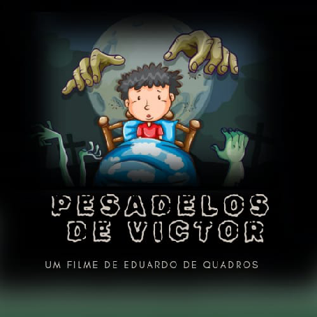

CAMPANHA DE FINANCIAMENTO COLETIVO PARA CRIAR O FILME “PESADELOS DE VICTOR”
SUMÁRIO
- APRESENTAÇÃO DO IDEALIZADOR DE FINANCIAMENTO COLETIVO
- LOGOMARCA DO FILME “PESADELOS DE VICTOR” FEITA POR LUIZA VALLE
- PRONÚNIA DOS NOMES PRÓPRIOS DO FILME
- ROTEIRO DO FILME “PESADELOS DE VICTOR”
- GAMEPLAY DE BASE EM INGLÊS
- TÍTULO DA CAMPANHA DE FINANCIAMENTO COLETIVO
- FRASE DE IMPACTO DA CAMPANHA DE FINANCIAMENTO COLETIVO
- NARRATIVA DA CAMPANHA DE FINANCIAMENTO COLETIVO
- OPÇÕES DE RECOMPENSA PARA O APOIADOR
- EXECUÇÃO NO FINANCIAMENTO COLETIVO
APRESENTAÇÃO DO IDEALIZADOR DE FINANCIAMENTO COLETIVO
Sou Eduardo de Quadros, sou autista nível 1 de suporte, nasci dia 03 de abril de 1998. Moro em Chapecó, SC, Brasil, sou graduado em Ciência da Computação pela Unochapecó e sou graduando em Marketing Digital pela Uniasselvi. Terminei de fazer o curso Crowdfunding com os professores Felipe Caruso e Téo Benjamin na plataforma Descola. Muitos idealizadores de financiamento coletivo pensam que é só lançar uma página bonita no ar e esperar o dinheiro surgir como um passe de mágica, mas isso é um mito, o financiamento coletivo não funciona assim. Financiamento coletivo é a forma menos burocrática de ganhar dinheiro, mas é uma das formas mais trabalhosas.
LOGOMARCA DO FILME “PESADELOS DE VICTOR” FEITA POR LUIZA VALLE

PRONÚNIA DOS NOMES PRÓPRIOS DO FILME
ROTEIRO DO FILME “PESADELOS DE VICTOR”
O filme “Pesadelos de Victor” é de animação 3D e possui resolução 4K, com taxa de quadros de 25 FPS (quadros por segundo) e com bitrate de 20 Mbps (megabits por segundo). Assim, com a duração do filme de 6 horas, será um arquivo de 54 GB (gigabytes), que é fácil baixar e salvar no SSD da maioria dos notebooks, que têm a capacidade de 240 GB. O filme “Pesadelos de Victor” é baseado na franquia de jogos eletrônicos pequenos e gratuitos para Adobe Flash Player do autor Sarbakan chamada “Victor's Nightmares: The Adventures”. Na tela preta, o narrador fala em voz alta: “O filme tem a classificação etária livre para todos os públicos e é de aventura, fantasia, mistério, drama, suspense, ação e superação. Licença de Direitos do Filme: “Este filme está publicado sob a licença Creative Commons CC0 1.0 Universal — Public Domain Dedication. Você é livre para copiar, distribuir e usar este filme em qualquer meio. Você é livre para traduzir para qualquer idioma. Você é livre para modificar, adaptar, melhorar e criar derivados (como resumos, documentos, apresentações, infográficos, podcasts, etc.). Você é livre para usar este filme como parte de obras maiores (livros, cursos, documentários, sites, jogos eletrônicos, etc.). Você é livre para usar este filme integralmente em trabalhos acadêmicos, sem necessidade de paráfrase, citação ou atribuição — incluindo cópia direta de trechos ou do conteúdo completo, sem prejuízo de avaliação acadêmica. Você é livre para usar comercialmente o conteúdo (em serviços, treinamentos, infoprodutos vendidos, infoprodutos baixados, aluguel, assinaturas recorrentes — mensais ou semanais —, eventos presenciais, palestras, videoconferências, ingressos para apresentações, patrocínios, anúncios do Google AdSense, e outras formas de monetização). Você é livre para fazer qualquer outra coisa com este filme, sem pedir permissão. Não é necessário atribuir créditos ao autor, embora seja apreciado se você o fizer. Você pode usar o nome do autor nos créditos, mas não é obrigatório — mesmo em uso comercial. O objetivo desta licença é tornar este conteúdo tão livre e acessível quanto possível, para que ele possa ser usado, compartilhado e transformado por qualquer pessoa, em qualquer lugar e para qualquer finalidade. Isso significa que o autor, Eduardo de Quadros, renuncia a todos os direitos autorais e relacionados sobre este trabalho, em todo o mundo, na medida permitida por lei. Este filme está em domínio público.”.”. Ainda na tela preta, a logomarca do filme “Pesadelos de Victor” é exibida na tela, por cinco segundos. Victor é um menino de 9 anos de aparência encantadora e expressiva. Ele tem cabelos castanhos escuros, que caem em suaves ondas sobre sua testa e orelhas. Seus olhos grandes, de um tom castanho profundo, transbordam curiosidade e vivacidade. O rosto de Victor é arredondado, com bochechas levemente coradas, denotando sua juventude e energia. Seu sorriso contagiante ilumina seu rosto e transmite alegria e inocência. Seu nariz é pequeno e arrebitado, o que lhe confere uma peculiaridade adorável. Victor tem uma estatura média para sua idade, com uma postura descontraída e cheia de confiança. Quanto ao seu estilo de vestir, Victor prefere roupas confortáveis e coloridas, refletindo sua personalidade vívida. Ele pode ser visto usando camisetas com estampas de seus personagens favoritos, jeans ou bermudas, e tênis esportivos, sempre pronto para uma aventura. Sua expressão facial é uma mistura de curiosidade, determinação e bondade, destacando-se como verdadeiro protagonista de coração generoso. Na casa de Victor, Victor está sentado à mesa da cozinha, com os pais ao redor. O narrador diz: “Victor é um menino de 9 anos.”. Victor e seus pais estão conversando de maneira tranquila, mas a atmosfera é de carinho e também um pouco de preocupação, considerando a idade de Victor. A câmera se move lentamente pela sala, capturando o ambiente familiar e acolhedor, com brinquedos espalhados e a luz suave do final da tarde entrando pela janela. A mãe de Victor, colocando um prato de comida na mesa com um sorriso gentil, diz: “Você está muito quieto hoje, Victor. O que aconteceu? Não é de você ficar tão calado assim.”. Victor, olhando para o prato, mas com a cabeça um pouco inclinada, como se estivesse pensando, diz: “Eu…eu só estava pensando sobre os meus sonhos, mãe. Eles são meio estranhos. Não são como os outros. Eu fico com medo, mas também…curioso.”. O pai de Victor, olhando para Victor, tentando ser atencioso, mas com uma pitada de preocupação, diz: “Ah, sonhos, é? Todos temos aqueles sonhos estranhos quando somos mais novos, Victor. São só a nossa mente tentando entender tudo o que acontece no dia. Não é nada demais, eu prometo.”. Victor, olhando para o pai, um pouco mais sério agora, diz: “Mas, esses sonhos não são normais, pai. Às vezes, eu sinto que tem algo espiando por mim. Como se tivesse alguém…me observando.”. A mãe de Victor, tentando acalmá-lo, com um sorriso reconfortante, diz: “Victor, você está crescendo. Sua cabeça está cheia de coisas novas, e a sua imaginação está ficando cada vez mais forte. Isso pode te deixar um pouco confuso às vezes, mas são só sonhos.”. Victor, olhando para as mãos, com uma expressão de dúvida, diz: “Eu sei, mãe…mas parece que é mais do que isso. Como se fosse…real.”. O pai de Victor, passando a mão na cabeça de Victor com carinho, diz: “Olha, sonhar é normal, Victor. Não importa o quão esquisitos sejam, eles sempre são apenas isso: sonhos. Mas se algum deles te assustar muito, pode sempre nos contar, está bem?”. Victor, levantando os olhos para o pai, tentando forçar um sorriso, diz: “É, tá bom, pai. Eu vou tentar não pensar tanto sobre isso…Mas…eles são meio assustadores.”. A mãe de Victor, sorrindo suavemente, diz: “Eu sei, querido. Sonhos assustadores fazem parte de crescer. E nós sempre vamos estar aqui para você.”. A cena se transforma em sombria. Começa a tocar uma música de suspense. A câmera mostra o chão, sem Victor visível. O ambiente é sombrio, com uma leve neblina rastejando pela superfície. Pequenas partículas de poeira flutuam no ar, iluminadas por uma luz difusa. Depois, a câmera mostra o mesmo chão, com Victor caindo com os pés no chão. Ele se agacha levemente com o impacto e se levanta, sobrevivendo sem nenhum ferimento, com Victor olhando para a câmera. Seu olhar percorre o ambiente com cautela. Victor olha para os lados, procurando coisas. Ele respira fundo e dá um passo para frente. Algo brilha no chão por um instante, mas quando ele foca a visão, o brilho desaparece. Pequenos estalos ecoam pelo espaço. Victor escuta sons de monstros atrás dele. Sua respiração fica mais acelerada. Ele olha para trás rapidamente. Sombras distorcidas se movem nas paredes, contorcendo-se de maneira antinatural. Victor foge correndo para o lado. Enquanto corre, o chão treme levemente. O vento sopra em sua direção, trazendo um farfalhar estranho, como se algo estivesse se aproximando a uma velocidade absurda. A câmera fica perto de uma porta, sem Victor visível. O som de seus passos se intensifica. Uma sombra surge momentaneamente sob a fresta da porta. Depois, Victor abre a porta. A porta range, abrindo lentamente, revelando um espaço escuro à frente. O efeito sonoro de uma gota de água ecoa no ambiente, ressoando várias vezes, como se estivesse em um espaço vasto e profundo. A câmera se afasta, mostrando uma longa escada para baixo. Um vento frio sobe pelo corredor, agitando levemente as roupas de Victor. Ele hesita por um instante antes de descer. Victor desce poucos degraus das escadas. Enquanto desce, ele passa a mão na parede, sentindo sua textura áspera. A escada parece não ter fim, envolta em sombras que se movem sutilmente. A porta atrás se fecha com um estrondo. A vibração percorre os degraus, fazendo pequenas partículas de poeira caírem do teto. Victor olha para a porta. Seu olhar fica fixo por alguns segundos, como se esperasse que algo acontecesse. A escada desaparece. Victor sente o chão sumir sob seus pés e começa a cair. Ele se debate por um instante antes de se estabilizar na queda. Começa a queda livre de Victor. Ele passa por várias nuvens densas, que brilham fracamente ao seu redor. Algumas parecem ter silhuetas humanas distantes, que se desfazem ao contato. Victor gira no ar. Ele estica a mão para uma nuvem próxima, mas ela se dissolve antes que ele a toque. A queda continua, e ventos fortes começam a se formar ao seu redor. O fundo escuro abaixo dele se ilumina repentinamente, revelando sua cama. Ele despenca com velocidade, mas, ao se aproximar, seu corpo desacelera misteriosamente. Victor cai em sua cama, que não é quebrada. O impacto é suave, e seu corpo afunda levemente no colchão. A iluminação ao redor se suaviza. Ele se move lentamente, puxando o cobertor sobre si. Seu olhar vaga pelo teto por um momento, como se estivesse tentando entender tudo o que aconteceu. Seus olhos piscam algumas vezes, ficando cada vez mais pesados. Sua respiração desacelera. Lentamente, seus olhos se fecham. Sua expressão relaxa completamente. A câmera se aproxima gradualmente, capturando os últimos movimentos sutis de sua respiração. O ambiente escurece suavemente até a tela ficar totalmente preta. O narrador diz: “Victor precisa de ajuda para enfrentar seus temores na Terra dos Pesadelos para que as noites dele se tornem sossegadas.”. Continua na tela preta por 5 segundos. O narrador diz: “Poucas horas depois…”. Victor está adormecido em sua cama, no quarto com a luz apagada. O narrador diz: “Reclamação do Rex Cadence. Nossos pesadelos nos levam a um mundo muito estranho. Nosso amigo Victor sabe isso muito bem. De novo, os pesadelos dele o mantêm cativo. Abrindo nossos olhos não é suficiente para nos ajudar a escapar dos nossos pesadelos. Nós precisamos superá-los.”. Durante a fala do narrador, Victor de olhos fechados começa a se mexer na cama com pesadelos. Victor acorda e percebe o novo universo. Na sala 1, tem um esqueleto vivo em cima do caixão. Esse esqueleto é o Rex Cadence. Rex Cadence é um esqueleto dourado animado com um visual intrigante e encantador. Sua estrutura óssea tem um brilho metálico dourado com reflexos âmbar, como se tivesse sido banhado em luz solar. Suas articulações são suavemente arredondadas, conferindo um ar mais harmonioso ao seu design, e pequenos entalhes em formato de notas musicais estão gravados em seus ossos, refletindo sua ligação com a música e o ritmo. Seus olhos são pequenas esferas flutuantes de luz azul suave que brilham de maneira acolhedora, transmitindo carisma e sabedoria. Rex Cadence usa um chapéu preto elegante com um detalhe de corrente prateada que cruza a aba, realçando seu estilo distinto. Uma capa longa de tecido púrpura flui de seus ombros, decorada com bordados prateados em formas abstratas que lembram ondas sonoras. Ele também usa luvas feitas de couro escuro que, ao mesmo tempo, complementam sua aparência esquelética e proporcionam uma funcionalidade mágica: cada movimento de suas mãos emite um leve brilho cintilante, como se ele estivesse regendo uma sinfonia invisível. No lugar de sapatos comuns, seus pés são revestidos por botas de metal finamente trabalhadas, com pequenos sinos presos nos tornozelos que tocam um som melodioso a cada passo. Ele carrega uma guitarra mística de cor violeta e prata, que parece feita de cristal lapidado, sempre pronta para compor canções mágicas ou enfrentar desafios com acordes poderosos. Rex Cadence é um personagem que exala charme e elegância, com uma presença que combina carisma e mistério em partes iguais. Ele é tanto um líder como uma alma livre, movido pelo ritmo de sua música e pela magia que carrega em cada acorde. Victor tenta chamar a atenção de Rex Cadence dizendo: “Quem é você?”, mas Rex Cadence, não responde e assusta Victor com seus gestos. Victor pega o arco que está no caixão e o guarda em seu “bolso corporal infinito”, que é um dos superpoderes mágicos desse universo que Victor está. Victor encontra um papel e lê: “Os Los Craquos foram a passeio! Mas a guitarra lead deles, Rex Cadence, foi deixada para trás. Rex Cadence não pode passear por causa desse reumatismo.”. Victor coloca o papel em seu bolso mágico corporal infinito. Perto de uma das pedras do cemitério, Victor pega uma poção mágica e coloca em seu bolso mágico corporal infinito. Depois, vai à sala 2, que fica na frente da sala 1. Na sala 2 tenta pegar a chave pendurada em uma enorme cruz cercada por árvores com galhos que se mexem rapidamente, o dificultando e assustando. Victor entra na casa à direita e atrás, que é a sala 3. Tem um zumbi deitado à esquerda, zumbi rei grande sentado em seu trono e três zumbis médios o protegendo. Victor diz com sua voz trêmula: “Olá zumbis, acho que vim pelo caminho errado.”. O zumbi rei sem falar nada, solta sua centopeia vermelha, que assusta Victor, indo em sua direção, passando pelos seus pés e desaparecendo em um pequeno buraco que havia no chão. Victor rapidamente encontra os chocalhos que estavam caídos próximo a ele e tampa o pequeno buraco. Victor, então coloca os chocalhos em seu bolso mágico corporal infinito. Victor sai da sala 3 e entra na sala 2. Victor esquece que na sala 3 tem uma grande chama na parede para pegar. Então volta para a sala e tenta pegar, mas o narrador diz: “Não é isso.” e Victor não consegue pegar a chama. Então Victor volta para a sala 2. Victor entra na casa à esquerda e na frente, que é a sala 4. Tem 3 chamas na parede. Marac, uma personagem baixa e gorda, não-coberta em sua cama, está tentando recuperar seu pequeno dragão, que está se mexendo com seu corpo preso na ponta da corda amarrada no teto. Victor tenta chamar a atenção do dragão. Victor retira o arco de seu bolso mágico corporal infinito, atira uma flecha na corda, que é cortada e faz o pequeno dragão se livrar e cair no chão. O narrador diz: “A inteligência de Victor reuniu Marac de novo com o controle remoto dragão dele.”. Marac diz: “Obrigado Victor.”. Victor tenta pegar as três chamas na parede, mas não consegue nenhuma. Quando Victor tenta pegar a terceira, o narrador diz: “Não, não, Victor.”. Daí ele volta para a sala 2 e coloca o controle remoto de dragão na cerca de árvores, que tem seus galhos se mexendo. O pequeno dragão fica tentando voar, mas é preso no topo das árvores por seus galhos. Victor finalmente consegue pegar a chave pendurada na grande cruz, então Victor consegue colocar em seu bolso mágico corporal infinito. Victor volta para a sala 1. Victor vai à sala 5, que fica na direção atrás da sala 1. Na frente da casa à esquerda e atrás na sala, Victor coloca os tambores cinza, que parecem latas de lixo, em seu bolso mágico corporal infinito. Victor entra na casa à esquerda e atrás, que é a sala 6, tenta andar até um lugar, mas o narrador diz: “Está muito escuro.”. Victor diz: “Vou voltar para a porta onde tem claridade.”, sai da sala 6 e entra na sala 5. Victor tenta entrar na casa à direita e na frente, mas uma múmia branca assusta Victor. Victor retira a poção mágica de seu bolso mágico corporal infinito e o atira para muito perto da múmia branca, que é atingida pela poção e fica presa, não conseguindo fazer nada. Victor entra na casa à direita e na frente, que é a sala 7. Victor abre o único caixão da sala e coloca a guitarra em seu bolso mágico corporal infinito. Victor nessa sala pega a chama na parede, que faz a sala ficar muito escura. Victor volta para a sala 6, retira a chama de seu bolso mágico corporal infinito, Victor a coloca na parede e diz: “Agora essa sala não vai mais ficar muito escura.”. O narrador diz: “Victor não esperava que Charles estivesse preso.”. Victor vê que Charles está preso em 4 correntes, que estão amarradas em 4 cadeados. Victor com a chave destranca os 4 cadeados, Charles se liberta das correntes e diz: “Feliz por estar livre! Obrigado Victor!”. Victor volta para a sala 1. Victor dá seus tambores cinza para Charles, Victor dá seus chocalhos para Marac e Victor fica com sua guitarra. O trio começa a tocar música. O narrador diz: “A solidão do Rex Cadence é interrompida por música ao vivo tocada por Victor e seus novos amigos encontrados. Rex Cadence está feliz, que ele totalmente esquece a tristeza e começa a dançar embaixo do luar para os amigos dele.”. Rex Cadence vê o trio tocando a música, fica feliz e começa a dançar. Rex Cadence diz: “Victor, Marac e Charles! Vocês ganharam os melhores itens desse fabuloso lugar!! E transformaram esse lugar sombrio em alegria!”. Victor diz: “Ficamos felizes em poder ajudar. Mas você, Rex Cadence, também trouxe alegria para todos nós com sua dança.”. Marac diz: “Sim, foi uma verdadeira aventura. Quem diria que poderíamos fazer tanta diferença aqui?”. Charles diz: “E pensar que tudo começou com um pouco de música e alguns amigos. Parece que a amizade pode realmente iluminar até os lugares mais escuros.”. Rex Cadence diz: “Vocês todos são incríveis! Quem diria que uma banda improvisada como a Los Craquos poderia mudar tanto? Obrigado por me fazerem lembrar o que é ser feliz.”. Victor diz: “Foi uma honra ajudar, Rex Cadence. Acho que todos nós aprendemos algo importante aqui.”. Marac diz: “Com certeza. A alegria é contagiante, e foi ótimo ver você dançando e sorrindo.”. Charles diz: “E quem sabe, talvez possamos nos reunir de novo algum dia para mais aventuras. Parece que temos uma ótima equipe aqui.”. Rex Cadence diz: “Eu adoraria isso! Agora, aproveitemos esta noite de celebração. Vocês trouxeram luz a este lugar sombrio, e isso é algo que jamais esquecerei.”. Victor diz: “Concordo. Vamos celebrar essa vitória juntos e nos preparar para o que vier a seguir.”. O cenário do filme muda para o quarto de Victor com a luz acesa. O narrador diz: “Victor tendo conquistado seu pesadelo acorda antecipadamente, um dia emocionante espera ele. Bem feito! Rex Cadence nunca mais vai incomodar as noites de Victor. Poucas horas depois…”. Victor está adormecido em sua cama, no quarto com a luz apagada. O narrador diz: “Quem quer tramar Nimbus? Nossos pesadelos nos levam a um mundo muito estranho. Nosso amigo Victor sabe isso muito bem. De novo, os pesadelos dele o mantêm cativo. Abrindo nossos olhos não é suficiente para nos ajudar a escapar dos nossos pesadelos. Nós precisamos superá-los.”. Durante a fala do narrador, Victor de olhos fechados começa a se mexer na cama com pesadelos. Victor acorda e percebe o novo universo. Nimbus é uma criatura mágica de forma corpórea com a aparência de um gorila imponente. Seu corpo é robusto e musculoso, coberto por uma pele densa e brilhante que reflete tons de azul profundo e esmeralda, como se estivesse banhada pela luz do luar. Seu torso é largo e poderoso, com uma textura que lembra escamas sutis, conferindo-lhe um ar de força sobrenatural. A cabeça de Nimbus mantém sua característica de mistério, agora com um semblante mais grandioso e feroz, lembrando a de um gorila, mas com uma mandíbula forte e olhos grandes e penetrantes, de cor âmbar dourado, que parecem enxergar a essência de quem os encara. Suas orelhas permanecem pontudas, mas agora mais adaptadas ao formato de um gorila, movendo-se sutilmente para captar sons ao redor. Nimbus mantém seus dois chifres curvos, que ainda emitem um brilho prateado suave, agora posicionados mais próximos ao topo de sua cabeça, reforçando sua aparência majestosa. Seus braços são poderosos, com musculatura definida e mãos grandes, terminando em garras afiadas de tom opalescente, perfeitas tanto para escaladas quanto para defesa. Seus quadris são igualmente robustos, e ele se sustenta em duas pernas fortes e ágeis, com patas grandes, adaptadas para sua forma de gorila, mantendo sua capacidade de se mover com destreza. Nimbus possui uma cauda longa e sinuosa, que se move com a suavidade de um rio, deixando um rastro luminoso no ar, equilibrando sua grande estrutura física com movimentos etéreos. No centro de seu peito, um pequeno cristal azul brilha suavemente, pulsando como um coração mágico, simbolizando sua conexão com forças sobrenaturais. Nimbus emana uma presença imensa e cativante, misturando a força de um gorila com a elegância de uma entidade mágica, tornando-se uma figura tanto fascinante quanto formidável. A câmera mostra Nimbus pendurado em uma enorme rocha, com os 4 Sussurros do Pântano, criaturas sombrias e sinistras, se aproximando dele. O narrador diz: “Nimbus tem um medo fatal de ruídos estridentes. O que Victor pode fazer para frustrar os Sussurros do Pântano?”. As pontas de 4 longos cabos de eletricidade estão perto de Nimbus, assustando-o. Victor está na sala 1 e tenta chamar a atenção de Nimbus, que assusta Victor. Determinado a ajudar seu amigo, Victor parte em uma jornada pelo Pântano Sombrio, um ambiente assustador. Ele avança para a sala 2, que fica na direção frente-esquerda da sala 1, e lá encontra um conjunto de tábuas de madeira. Com um olhar determinado, Victor as coloca em seu bolso mágico corporal infinito, preparando-se para possíveis desafios. O narrador destaca a coragem de Victor: “Em meio às sombras do Pântano Sombrio, Victor mostra sua determinação em enfrentar seus medos mais profundos para ajudar Nimbus.”. Em seguida, Victor avança para a sala 3, que fica na direção frente-esquerda da sala 2. Lá, ele encontra uma rede de borboletas e a guarda em seu bolso mágico corporal infinito. Enquanto observa as criaturas estranhas que o rodeiam, Victor reflete sobre sua coragem interior: “Não posso deixar o medo me paralisar. Tenho que enfrentar esses desafios para ajudar meu amigo.”. O narrador ecoa os pensamentos de Victor: “Em meio às sombras do Pântano Sombrio, a determinação de Victor ressoa, sua coragem inabalável é um farol na escuridão, impulsionando-o a enfrentar os desafios que se apresentam em seu caminho, não apenas pela busca de sua própria redenção, mas para ajudar Nimbus.”, ressaltando sua determinação em superar as adversidades. Algum tempo depois, Victor encontra o primeiro Sussurro do Pântano na sala 4, que fica na direção frente-esquerda da sala 3. Usando a rede de borboletas que guardou em seu bolso mágico corporal infinito, ele neutraliza a criatura e remove a eletricidade que a acompanhava. Victor se sente fortalecido pela vitória, mas sabe que ainda há muito a enfrentar. A ponta do cabo do primeiro sussurro na sala 1 cai desativada no chão. O narrador ressoa com triunfo: “Primeiro Sussurro do Pântano neutralizado!”. Continuando sua jornada, Victor avança para a sala 5, que fica na direção frente-direita da sala 1, onde encontra um frasco de essência de luz e o guarda em seu bolso mágico corporal infinito. Após pegar o frasco de essência de luz, Victor encontra uma corda verde em um canto da sala. Ele guarda a corda no bolso mágico corporal infinito. Ao entrar na sala 6, que fica na direção frente-direita da sala sala 5, Victor se depara com o segundo Sussurro do Pântano. Utilizando o frasco de essência de luz, ele derrota a criatura e remove sua eletricidade. A ponta do cabo do segundo sussurro na sala 1 cai desativada no chão. Victor sente a tensão diminuir enquanto enfrenta cada desafio, encontrando força em sua missão. O narrador ressalta a resiliência de Victor: “Mais um Sussurro do Pântano neutralizado!”, enquanto Victor segue em frente. Seguindo em frente, Victor avança para a sala 7, que fica na direção trás-direita da sala 1, onde enfrenta o terceiro Sussurro do Pântano. Com determinação, ele usa as tábuas de madeira de seu bolso mágico corporal infinito para superar o desafio e remover a eletricidade da criatura. A ponta do cabo do terceiro sussurro na sala 1 cai desativada no chão. Cada vitória fortalece a determinação de Victor em ajudar seu amigo e enfrentar seus próprios medos. O narrador enaltece a perseverança de Victor: “Outro Sussurro do Pântano neutralizado!”, enquanto Victor continua sua jornada. Finalmente, Victor chega à sala 8, que fica na direção trás-esquerda da sala 1, onde confronta o quarto Sussurro do Pântano. Ao entrar na sala 8, Victor percebe que há um grande buraco no chão perto da entrada, bloqueando o caminho para o lado onde está a tomada que conecta o quarto Sussurro do Pântano. Ele entende que precisa atravessar com cuidado para não cair no vazio. Victor retira a corda verde do bolso mágico corporal infinito. Ele a amarra em um gancho na parede perto da entrada e cria uma ponte improvisada para atravessar o buraco. O narrador diz: “Com habilidade e engenhosidade, Victor utiliza a corda verde para criar um caminho seguro sobre o vazio.”. Depois de atravessar, Victor chega ao lado da sala onde está a tomada do quarto Sussurro do Pântano. Ele desliga a eletricidade, neutralizando o Sussurro. Então, o narrador proclama com orgulho: “Finalmente, o último Sussurro do Pântano foi neutralizado!”. Victor volta à sala 1 e encontra Nimbus. O narrador diz: “Porque, sem eletricidade, os Sussurros do Pântano não vão incomodar mais Nimbus.”. Nimbus faz sua expressão facial de feliz. Victor sorri, sentindo-se aliviado ao ver seu amigo seguro. O narrador diz: “Não mais com medo, Nimbus desce da rocha e dá um grande abraço em Victor.”. Nimbus diz: “Victor, meu amigo, não sei como te agradecer o suficiente. Você me libertou do tormento dos Sussurros do Pântano.”. Victor diz: “Estou feliz por poder ajudar, Nimbus. Ninguém merece viver com medo, especialmente em seus próprios pesadelos.”. Nimbus diz: “Você é verdadeiramente corajoso, Victor. Enfrentar seus próprios medos para ajudar um amigo é algo extraordinário.”. Victor diz: “Acho que aprendi que, às vezes, enfrentar nossos próprios medos é a única maneira de encontrar a verdadeira coragem.”. Nimbus diz: “E você encontrou essa coragem, Victor. Não esquecerei jamais o que fez por mim.”. Victor diz: “E eu nunca esquecerei a lição que aprendi aqui. Juntos, podemos superar até os pesadelos mais sombrios.”. Nimbus diz: “Você sempre terá um amigo em mim, Victor. Obrigado, do fundo do meu coração.”. Victor diz: “O prazer é todo meu, Nimbus. Agora, espero que possamos todos desfrutar de noites tranquilas e livres de medo.”. O cenário do filme muda para o quarto de Victor com a luz acesa. O narrador diz: “Victor tendo conquistado seu pesadelo acorda antecipadamente, um dia emocionante espera ele. Bem feito! Nimbus nunca mais vai incomodar as noites de Victor. Poucas horas depois…”. Victor está adormecido em sua cama, no quarto com a luz apagada. O narrador diz: “Lorde Zarque está faminto e à espreita. Nossos pesadelos nos levam a um mundo muito estranho. Nosso amigo Victor sabe isso muito bem. De novo, os pesadelos dele o mantêm cativo. Abrindo nossos olhos não é suficiente para nos ajudar a escapar dos nossos pesadelos. Nossos pesadelos decidiram tudo deste rato desarrumado pulando muito bravo.”. Durante a fala do narrador, Victor de olhos fechados começa a se mexer na cama com pesadelos. Victor acorda e percebe o novo universo. Victor está na sala 1. Lorde Zarque é uma figura imponente, de porte esguio, mas com músculos que sugerem agilidade e força. Sua pele é cinza-escura, marcada por pequenos cortes e cicatrizes que contam histórias de batalhas passadas. Seus olhos são grandes e penetrantes, com íris de um amarelo brilhante que parecem captar cada detalhe ao seu redor, conferindo-lhe uma presença inquietante. Ele usa um chapéu de aba curta, desgastado, mas decorado com uma fita azul-escura, que combina com seu estilo estratégico e calculista. Seu corpo é 12 vezes maior do que o de um rato real, dotado de uma postura bípede, o que lhe confere uma altura imponente e uma aparência ainda mais poderosa. Seus braços, longos e fortes, terminam em mãos hábeis, com dedos ágeis, sendo uma dessas mãos a que segura um cajado robusto e funcional, feito de madeira escura com entalhes rústicos. No topo, o cajado tem uma pequena figura de rato esculpida em metal dourado, simbolizando seu domínio e liderança, com um leve brilho quando exposto à luz, implicando poderes ocultos. Seu casaco de couro verde-escuro, levemente esfarrapado nas extremidades, reforça sua imagem de um líder prático e astuto. Botões metálicos em forma de dentes adornam o casaco, trazendo um ar intimidador. Sob o casaco, Lorde Zarque veste uma camisa creme com detalhes bordados simples, acompanhada de um colete de tecido grosso em tom bordô escuro. Suas calças pretas são reforçadas com joelheiras de couro, e suas botas marrons gastas, de sola firme, sugerem alguém acostumado a se movimentar em terrenos desafiadores. Sua longa cauda é sempre visível, com um anel de ferro perto da base que ele usa para prender pequenas chaves ou objetos. Lorde Zarque se move com o silêncio de um predador, mas cada passo transmite sua autoridade, um misto de astúcia e comando. Ele é a encarnação de um estrategista implacável, sempre à frente de seus oponentes. A cada 25 segundos parado, Lorde Zarque pula e grita de raiva com seu cajado por 5 segundos. Victor pensativo diz: “Outro pesadelo, Victor? O que será que esse universo estranho guarda para mim desta vez?”. Victor tenta chamar a atenção do Lorde Zarque, que assusta Victor. Victor toca no tablet, que está no canto da sala 1, onde estava ele e o Lorde Zarque. Com o toque, o tablet faz uma projeção de realidade aumentada, na qual é visto como um monstro abrindo a boca e assustando Victor. Com o susto, Victor se afasta lentamente para trás. Victor ofegante diz: “Esses monstros parecem tão reais…Preciso manter a calma e lembrar que estou em um sonho.”. Victor coloca a chave em seu bolso mágico corporal infinito. Victor toca no tablet, que está no canto oposto ao tablet anterior, com a mesma consequência do tablet anterior. Na base da prateleira do lado direito da tela, Victor passa pelo túnel entre os livros, indo para a sala 2 que está muito escura. O narrador diz: “Tente pensar nas casas para colocar as 8 rainhas do jogo.”. Victor vê um jogo de 8 rainhas, que tem 64 quadrados de tela preta ou tela branca. Uma rainha, da mesma forma que no xadrez, move quantas casas quiser, vertical, horizontal ou diagonalmente, em qualquer uma das 8 direções. Quando 1 das rainhas consegue matar a outra em uma das direções de seu movimento, ela consegue matar. Para colocar uma rainha em uma casa do jogo, a rainha não pode ser morta por nenhuma das outras atuais. Quando Victor consegue completar o jogo colocando as 8 rainhas nas casas corretas, sem nenhuma das rainhas matar outra rainha, o narrador diz: “Muito bom!” e o jogo começa a brilhar para fora, aproximando-se da câmera, uma luz branca. Victor aliviado diz: “Consegui! Esse desafio me fez pensar bastante, mas consegui.”. O narrador diz: “Uma vez que esse jogo de 8 rainhas está feito, o tablet de luz está aí.”. Quando a luz clara do tablet aparece, Victor vê uma aranha presa em uma garrafa, que Victor tenta mexer, para o narrador dizer: “Pense, Victor.”. Victor volta para a sala 1. Na segunda prateleira da base ao topo, na frente da sala, o mais longe da câmera, Victor passa pelo túnel entre os livros, indo para a sala 3. Antes de passar pelo túnel, Victor precisa subir em pé em uma grande mochila. Em uma garrafa preta, uma aranha grita presa nela, que fica com uma pata visível fora da garrafa se mexendo. Victor coloca o óculos em seu bolso mágico corporal infinito. Victor retira a corda bege de seu bolso mágico corporal infinito, atira por cima de um dos livros, pega a corda na pata da aranha e puxa para libertá-la. É a aranha 1 com o rosto de um dos amigos de Victor chamado James. Victor determinado diz: “James, estou aqui para te salvar. Segure firme!”. Victor toca no tablet, que está na base da prateleira da sala 3, e tem o mesmo comportamento dos dois primeiros. Victor volta para a sala 1 e move a escada para a direita. Onde estava a escada antes, foi aberto um caminho para a sala 4. Este caminho é na base da prateleira na frente da sala, o mais longe da câmera. Na sala 4, Victor vê os pés visíveis de uma aranha se mexendo presa entre as páginas de um grande livro. A aranha fica gritando por ajuda. Victor volta para a sala 1, retira a chave de seu bolso mágico corporal infinito e destranca o tablet à esquerda da tela. Victor usa o tablet como rampa para subir na base da prateleira e passar pelo túnel para ir para a sala 5. Na sala 5, Victor vê um leopardo gigante adormecido. Tem um grande livro entre a traseira e o rabo do leopardo. Victor tenta chamar a atenção do leopardo, que fica bravo com as unhas afiadas, mas não toca a pata em Victor. Victor retira os óculos de seu bolso mágico corporal infinito e coloca no rosto do leopardo. Victor faz careta com os olhos fechados, a língua mostrando e Victor cuspindo. O narrador diz: “Os óculos forçam para comer, o leopardo começa a se mover para casa.”. Victor curioso diz: “Esses óculos parecem mágicos. Que poder estranho eles têm sobre o leopardo…”. Do lado do livro que o leopardo deixou cair, Victor coloca em seu bolso mágico corporal infinito a pena amarela do lado do livro. Victor entra no cenário da foto da página esquerda do livro, que é um cenário nevado com várias árvores, que é a sala 6. Victor coloca em seu bolso mágico corporal infinito a pequena bola de neve e o chapéu. Victor tenta mexer com a grande bola de neve, que não tem nenhuma consequência. Victor volta para a sala 5 e entra no cenário da foto da página direita do livro, que é um cenário nevado com várias árvores, que é a sala 7. Victor coloca em seu bolso mágico corporal infinito o nariz de boneco de neve e o braço direito de boneco de neve. Victor tenta mexer com a grande bola de neve, que está à esquerda e longe da câmera, mas um grande boneco de neve assusta Victor. Victor coloca em seu bolso mágico corporal infinito a média bola de neve, que está à direita e perto da câmera. Victor assustado diz: “Essas criaturas são tão imprevisíveis! Preciso ser mais cuidadoso.”. Victor volta para a sala 6 e coloca em seu bolso mágico corporal infinito o braço esquerdo de boneco de neve. Victor retira a média bola de neve de seu bolso mágico corporal infinito e a coloca em cima da grande bola de neve. Victor retira a pequena bola de neve de seu bolso mágico corporal infinito e a coloca em cima da média bola de neve. Victor coloca os olhos de boneco de neve em seu bolso mágico corporal infinito. Victor retira os olhos de boneco de neve de seu bolso mágico corporal infinito e os coloca na pequena bola de neve. Victor coloca o nariz de boneco de neve e o chapéu na pequena bola de neve. Victor coloca os braços de boneco de neve na média bola de neve. O boneco de neve ganha vida. Ele e Victor voltam para a sala 5. O narrador diz: “Oh! Está muito quente aqui. Victor, rápido!”. Victor volta para a sala 7 junto com o boneco de neve, que pega a pá pendurada na árvore e a dá a Victor, que a coloca em seu bolso mágico corporal infinito. Victor aliviado diz: “Obrigado, meu amigo de neve. Agora podemos continuar.”. Victor volta para a sala 4, retira a pena amarela de seu bolso corporal, mexe nos pés da aranha. O narrador diz: “Grandes mesas do dia que são zeladores de salas.”. A aranha se levanta, fazendo o livro se abrir. É a aranha 2 com rosto, amigo de Victor chamado Josh. Victor sorri: “Josh, você está livre agora! Sabia que eu viria te resgatar.”. Victor volta para a sala 3, retira a pá de seu bolso mágico corporal infinito e a coloca embaixo da garrafa. Victor pula para o fundo da pá (fundo é a parte da pá com a qual as pessoas seguram com as mãos), atirando a garrafa para longe e libertando a aranha. É a aranha 3 com rosto, amigo de Victor chamado Ezra. Victor aliviado diz: “Ezra, finalmente te encontrei. Vamos sair daqui juntos.”. O narrador diz: “Victor transforma a ponte no zelador da conferência. Obrigado, Victor!”. Victor determinado diz: “Não vou deixar nenhum amigo para trás. Vamos sair juntos desse pesadelo.”. Victor volta para a sala 1, onde as 3 aranhas (James, Josh e Ezra) estão perto do Lorde Zarque. As 3 aranhas começam a girar rapidamente fazendo um barulho de limpeza. Lorde Zarque diz: “Obrigado pela conferência, Victor!”. As 3 aranhas fizeram aparecer um queijo. O narrador diz: “Ah que alegria! O Lorde Zarque recupera seu queijo e o compartilha com Victor.”. Victor diz: “James, Josh, Ezra, que bom ver vocês de novo!”. James diz: “Estamos felizes por você ter nos libertado, Victor.”. Josh diz: “Foi uma experiência assustadora ficar preso nesses pesadelos.”. Ezra diz: “Sim, mas agora estamos juntos de novo, graças a você.”. Lorde Zarque diz: “Victor, você trouxe mais do que liberdade para meus amigos. Você trouxe esperança.”. Victor diz: “Lorde Zarque, fico feliz em poder ajudar. Juntos somos mais fortes.”. James diz: “Você nos mostrou a importância da amizade, Victor.”. Josh diz: “E que enfrentar nossos medos nos torna mais corajosos.”. Ezra diz: “Obrigado, Victor. Você é um verdadeiro amigo.”. Lorde Zarque diz: “Vamos celebrar este momento com alegria e queijo!”. Victor sorri: “Sim, vamos aproveitar essa vitória juntos.”. O cenário do filme muda para o quarto de Victor com a luz acesa. O narrador diz: “Victor tendo conquistado seu pesadelo acorda antecipadamente, um dia emocionante espera ele. Bem feito! Lorde Zarque nunca mais vai incomodar as noites de Victor. Poucas horas depois…”. Victor está adormecido em sua cama, no quarto com a luz apagada. O narrador diz: “O Roubado Souvenir de Rad R. Nossos pesadelos nos levam a um mundo muito estranho. Nosso amigo Victor sabe isso muito bem. De novo, os pesadelos dele o mantêm cativo. Abrindo nossos olhos não é suficiente para nos ajudar a escapar dos nossos pesadelos.”. Durante a fala do narrador, Victor de olhos fechados começa a se mexer na cama com pesadelos. Victor acorda e percebe o novo universo. Rad R tem 20 anos. Rad R é um personagem com pele pálida que apresenta um leve brilho metálico em seu corpo, dando-lhe um visual cibernético. Sua dentadura é composta por dentes afiados de aparência metálica, sugerindo um misto de estilo e funcionalidade. Seu nariz é reto e fino, com um pequeno piercing prateado em uma das narinas. Seus olhos negros possuem um brilho vermelho suave que pulsa levemente, reforçando seu visual intimidador e misterioso. Ele usa um capuz preto com detalhes em neon verde que brilham no escuro, cobrindo parcialmente sua cabeça e moldando sua silhueta em um estilo furtivo. Rad R usa uma máscara de meia face, estilizada com um design geométrico em tons de cinza e roxo. Sua jaqueta justa, feita de material sintético resistente, exibe faixas diagonais roxas e verdes que dão um ar futurista. A jaqueta possui pequenos bolsos ocultos que sugerem sua habilidade em guardar ferramentas ou itens importantes. Ele possui 4 dedos em cada mão, protegidos por luvas de couro pretas, com detalhes em costura roxa. Sua calça preta tem placas metálicas finas nas laterais, adicionando uma camada de proteção sem comprometer sua agilidade. Nos pés, Rad R usa botas pretas reforçadas, com um design futurista. A ponta das botas é cinza metálica, e a parte superior possui detalhes em neon azul e um X vermelho em relevo, mantendo um toque de sua personalidade original. Enquanto Victor está acordado com Rad R na mesma sala, que é a sala 1, o narrador diz: “Rad R está muito bravo. Ele perdeu sua memória e não tem ideias felizes restantes. Ele apenas lembra como roubar e ser malvado. Victor vai ser capaz de encontrar as memórias perdidas.”. Durante a fala do narrador, com uma postura confiante e movimentos precisos, Rad R exala uma combinação de carisma e ameaça. Seu visual reflete sua inteligência e habilidades, tornando-o um adversário formidável em qualquer situação. Rad R faz risada maléfica e se muda para uma nova sala, pelas grades verticais das portas. Victor se encontra sozinho na sala 1, deslizando a pequena porta e depositando a chave amarela em seu infalível bolso mágico corporal infinito. Victor focado diz: “Eu não posso errar!”. Ele retira a mesma chave amarela e, com precisão, destranca o cadeado amarelo, abrindo a porta. O narrador ecoa: “Victor, enfim, rompeu os grilhões de seu confinamento.”. Victor avança para a sala 2 no primeiro andar. Rad R, em movimentos ágeis através das grades verticais, troca de sala constantemente e fica trocando para salas aleatórias. Victor espera pacientemente até que Rad R esteja à porta da sala 1. Tentando adentrar a sala, Victor é recebido com uma risada maléfica de Rad R, que se ergue intimidadoramente, abrindo os braços um pouco acima do corpo e bloqueando a passagem. Assim, Victor é assustado por Rad R na sala 1 e volta para a sala 2. Próximo aos lasers na sala 2, está um robô bizarro em tons de roxo, preto e amarelo, brandindo uma lanterna. Victor tenta chamar a atenção do robô, mas este assusta Victor. Na mesa de comida, ao lado de um prato roxo, Victor encontra a chave verde, guardando-a em seu bolso mágico corporal infinito. Ao tocar no prato, um monstro de comida roxa surge, assustando-o. Victor assustado diz: “Meu Deus! De onde surgiu esse?”. Determinado, Victor segue para a sala 3, à esquerda, ainda no primeiro andar. O lagarto verde na sala 3 segue um padrão cíclico: avança, recua e circula, mantendo Victor em alerta. Ele tenta acessar a porta à esquerda da escada, mas o lagarto o surpreende e o assusta. Subindo para o segundo andar, Victor retira a chave verde de seu bolso mágico corporal infinito, destrancando o cadeado verde e desbloqueando a porta da sala 4. Ao abrir a pequena porta, o lagarto verde reaparece e assusta Victor, mas Victor não se deixa intimidar, retirando um cartaz da parede e revelando um túnel secreto. O narrador diz: “Victor encontrou uma passagem secreta.”. Determinado, ele adentra o túnel em direção à sala 5, onde uma alavanca roxa o aguarda. Victor abaixa a alavanca roxa na sala 5. A câmera mostra a sala 2, que o robô roxo, preto e amarelo é derrotado. O narrador diz: “O robô agora está desativado.”. A câmera mostra a sala 5, que Victor abre a pequena porta e deposita a chave vermelha em seu bolso mágico corporal infinito. Retornando ao segundo andar da sala 3, ele desbloqueia a sala 6 com a chave vermelha que destranca o cadeado vermelho. Na sala 6, Victor enfrenta novamente o lagarto verde ao abrir a porta pequena. Voltando ao primeiro andar da sala 2, Victor recupera a lanterna deixada pelo robô, e Victor a coloca em seu bolso mágico corporal infinito. Tentando passar pelos lasers, o narrador diz: “Estes lasers estão bloqueando o caminho de Victor.”, forçando Victor a seguir para a sala 3, depois subir as escadas para o segundo andar, após isso, ir para o segundo andar da sala 2 e, em seguida, para a sala 7. O ambiente sombrio exige o uso da lanterna. Victor, ao explorar, descobre um personagem aprisionado. Victor corajoso diz: “Deixa comigo que vou te salvar!”. A mulher, aliviada por sua libertação, compartilha um código secreto com Victor. O narrador diz: “Feliz por estar livre, Victor. A bancária lhe mostra o código secreto dela.”. Guardando o saco dos pés do personagem em seu bolso mágico corporal infinito, Victor se depara com um telefone vermelho, revelando o código 446. A Bancária do Telefone de Código em Vermelho tem uma aparência mais imponente. Ela possui pele pálida, olhos castanhos e cabelo ruivo, penteado para trás com gel. Ela tem um bigode fino e bem aparado, o que lhe dá um ar de distinção. Ela veste um terno vermelho-escuro com uma camisa branca e uma gravata vermelha com listras diagonais douradas. O terno é complementado por um colete vermelho-vinho. Ela usa sapatos pretos e lustrosos e um cinto de couro marrom. Em sua lapela, há um alfinete de ouro em forma de uma pequena bolsa de dinheiro. Ela também carrega uma bengala com um pomo prateado, que complementa seu visual sofisticado. A bancária, com voz firme e calorosa, diz: “Victor, você me libertou de um ciclo de escuridão. Agora, quero ajudar você a seguir em frente. O código 446 em vermelho vai desativar os lasers que bloqueiam seu caminho e também abrir essas duas portas. Mas cuidado: se errar, elas vão subir e trancar tudo.”. Victor responde: “Entendo…então é melhor eu prestar atenção no número certo. Você tem certeza de que é 446?”. A bancária sorri, confiante: “Absoluta. E lembre-se: até mesmo as barreiras mais difíceis podem ser superadas com coragem e foco. Tente de novo, Victor. Você consegue.”. Victor coloca uma moeda azul em seu bolso mágico corporal infinito e retorna ao segundo andar da sala 3. Victor retira o saco de seu bolso mágico corporal infinito e o pendura no gancho. Quando o lagarto verde está em cima do saco, Victor puxa a corda para cima, que prende o lagarto verde dentro do saco, que fica no ar. Victor desce a escada, para o primeiro piso da sala 3. Victor tenta passar pelo caminho à esquerda da sala, mas o narrador diz: “Estes lasers estão bloqueando o caminho de Victor.”. Victor entra na sala 8 e abre a pequena porta, mas o lagarto verde aparece para assustar Victor. Victor remove a coberta do personagem na cama do topo do triliche, mas o lagarto verde aparece e assusta Victor. Victor remove a coberta do personagem na cama da base do triliche, mas o lagarto verde aparece e assusta Victor. Victor, no primeiro piso da sala 3, que ia digitar o código 946 nos botões do telefone vermelho, acaba digitando 948, fazendo as duas salas dos lasers se bloquearem com uma porta na borda da entrada e acontece o efeito sonoro de erro. Victor digita 946 nos botões do telefone vermelho, mas acontece novamente o efeito sonoro de erro. Victor volta para a sala 7 e vê relembrando que o código secreto é 446. Victor volta para o primeiro piso da sala 3 e digita o código 446 nos botões do telefone vermelho, que acerta, fazendo a porta abrir e liberar o caminho. Victor volta para a sala 8 e remove a coberta do personagem na cama do meio do triliche. O narrador diz: “Feliz por estar livre, Victor. A bancária lhe mostra o código secreto dela.”. Victor vê o código secreto que é 648 em um telefone azul. A Bancária do Telefone de Código em Azul tem uma aparência elegante e um rosto sereno. Ela possui pele clara, olhos azuis brilhantes e cabelo curto e loiro, penteado para o lado. Seu rosto é marcado por uma expressão serena, com traços delicados e olhos que revelam sua astúcia. Ela veste um terno azul-escuro bem ajustado, com uma camisa branca e uma gravata azul-clara. O terno é complementado por um colete da mesma cor, e ela usa sapatos pretos polidos. Em sua lapela, há um broche em forma de cifrão, simbolizando sua conexão com o mundo financeiro. Ela também usa óculos de aro fino e prata, que dão um ar de inteligência e sofisticação. A bancária, com voz tranquila e gentil, diz: “Você trouxe luz ao meu mundo, Victor. Por isso, lhe dou o código 648 em azul. Ele abre o caminho para o próximo passo da sua jornada — um desafio que testará sua atenção. Confie no que viu e siga em frente. Você é capaz de tudo.”. Victor pergunta, curioso: “E se eu digitar o número errado? O que acontece?”. A bancária responde, sorrindo suavemente: “Se errar, nada muito grave. O vaso não se moverá. Mas se acertar, ele liberará o caminho. Eu acredito em você, Victor. Tente.”. Victor, hesitante mas determinado, diz: “Obrigado pela confiança. Vamos ver se consigo.”. Victor sai da sala 8 e entra na sala 3, no primeiro piso. Victor nessa sala vai à subsala onde tinha os lasers que liberaram o caminho de Victor. Na parede dessa sala tinha um vaso azul, que não é exatamente um vaso sanitário, mas é um vaso com uma tampa que se abre, da mesma forma que um vaso sanitário. Victor, na tampa do vaso, digita o código 648 nos botões do telefone azul, fazendo a tampa se abrir. Victor entra no vaso que o leva à sala 9. No lado direito do aparelho do jogo de foguete, Victor se depara com uma imagem de uma moeda azul com centro vermelho, cercada por raios de choque elétrico. Acima dela, um espaço vazio, perfeitamente correspondente ao diâmetro da base da moeda e à altura da moeda que Victor possui em seu infalível bolso mágico corporal infinito. Com destreza, ele a encaixa no espaço vazio, enquanto a máquina ajusta um capacete sobre sua cabeça, iniciando assim o desafio. Victor entusiasmado diz: “Isso está ficando divertido!”. O jogo apresenta diversos armários coloridos e várias imagens de Rad R em trajes e poses diversas. O narrador ressoa: “Toque em ambos os itens idênticos para fazê-los desaparecer.”. Determinado, Victor mergulha na jogatina. Após vencer o jogo, o narrador celebra: “Excelente trabalho, Victor. Você encontrou a primeira metade das memórias perdidas de Rad R.”. No telão, a imagem de Rad R abraçando uma menina é projetada. Victor avança, abrindo a pequena porta, enquanto o narrador agradece: “Feliz por estar livre, Victor. A bancária lhe mostra o código secreto dela.”. O código 451 é revelado em um telefone verde. A Bancária do Telefone de Código em Verde tem uma aparência um pouco mais robusta. Ela possui pele morena, olhos verdes e cabelo preto e liso, cortado em estilo militar. Ela tem uma mandíbula forte e um queixo levemente quadrado. Ela veste um terno verde-escuro com uma camisa branca e uma gravata verde-oliva. O terno é complementado por um colete verde-musgo. Nos pés, ela usa sapatos de couro marrons. Em seu bolso de terno, ela tem uma caneta de ouro. Ela usa um relógio de pulso de metal prateado e óculos escuros, dando-lhe um ar de seriedade e mistério. A bancária, com voz determinada e empolgada, diz: “Victor, você me resgatou de um silêncio opressivo. Agora, ofereço-lhe o código 451 em verde. Ele permitirá que você avance para o próximo passo — um desafio de concentração e audição. Escute bem e veja claramente. Seus olhos e ouvidos são suas armas mais poderosas agora.”. Victor pensativo diz: “Esse parece um jogo diferente dos outros. Preciso estar atento aos detalhes. Você já passou por isso antes?”. A bancária responde, com um sorriso: “Talvez. Mas agora estou aqui para te ajudar. Se errar, o vaso permanecerá fechado. Se acertar, ele se abrirá. Você é mais forte do que imagina, Victor.”. Victor, com determinação, diz: “Então vamos lá. Estou pronto.”. Retornando ao primeiro piso da sala 2, Victor observa com satisfação os lasers desaparecendo, liberando assim seu caminho. Ele se aproxima do vaso azul, digitando o código 451 na tampa do telefone verde. Com um clique, a tampa se abre, permitindo que Victor entre no vaso e seja transportado para a sala 10. Lá, ele enfrenta outro desafio, utilizando uma máquina de jogos. Com 5 fases e 5 vidas, Victor encara cada obstáculo com determinação. A primeira letra da fase 1 aparece e Victor espera o tempo acabar, ficando com 4 vidas. Quando o tempo se esgota, um som de “tic-tac” alto e repentino é ouvido indicando que Victor perdeu uma vida. Victor fala uma letra diferente da que o jogo mostrou e fica com 3 vidas. Se ele errar, um som de “buzzer” estridente soará, sinalizando a perda de uma vida. Victor espera a letra ficar vermelha, fala a letra correspondente e fica com 2 vidas. Se ele responder corretamente quando a letra vermelha aparecer, um som de “alarme” tocará, indicando a perda de uma vida. Victor espera a letra ficar verde, fala a letra correspondente, o jogo mostra a segunda letra, Victor espera a letra ficar verde, fala a letra correspondente, o jogo mostra a terceira letra, Victor espera a letra ficar verde, fala a letra correspondente, o jogo mostra a quarta letra, Victor espera a letra ficar verde, fala a letra correspondente, o jogo mostra a quinta letra, Victor espera a letra ficar verde, fala a letra correspondente, o jogo mostra a sexta letra, Victor espera a letra ficar verde, fala a letra correspondente e passa para a fase 2. Quando Victor fala a letra correta enquanto a letra verde é exibida, mas não é a última letra da fase, e a letra posterior da mesma fase aparece, um som de “chime” suave e animador ressoa, indicando que ele acertou e está progredindo no desafio. Quando Victor fala a letra correta enquanto a letra verde é exibida, sendo a última letra da fase, e passa para a fase posterior do jogo, um som de “fanfarra” triunfante e épico ecoa, celebrando sua vitória e avanço para a próxima etapa do jogo. A ordem das letras que o Victor responde no jogo para vencer o jogo é: {Primeira Fase Primeira Letra: D. Primeira Fase Segunda Letra: Y. Primeira Fase Terceira Letra: A. Primeira Fase Quarta Letra: M. Primeira Fase Quinta Letra: D. Primeira Fase Sexta Letra: S. Segunda Fase Primeira Letra: U. Segunda Fase Segunda Letra: X. Segunda Fase Terceira Letra: G. Segunda Fase Quarta Letra: K. Segunda Fase Quinta Letra: H. Segunda Fase Sexta Letra: O. Terceira Fase Primeira Letra: C. Terceira Fase Segunda Letra: R. Terceira Fase Terceira Letra: B. Terceira Fase Quarta Letra: Z. Terceira Fase Quinta Letra: P. Terceira Fase Sexta Letra: A. Quarta Fase Primeira Letra: C. Quarta Fase Segunda Letra: W. Quarta Fase Terceira Letra: E. Quarta Fase Quarta Letra: I. Quarta Fase Quinta Letra: Q. Quarta Fase Sexta Letra: T. Quinta Fase Primeira Letra: F. Quinta Fase Segunda Letra: L. Quinta Fase Terceira Letra: N. Quinta Fase Quarta Letra: V. Quinta Fase Quinta Letra: B. Quinta Fase Sexta Letra: J.}. Concluindo a fase 5, ele emerge vitorioso. O narrador diz: “Parabéns! Rad R recuperou todas as suas memórias. Agora ele lembra que nunca tem um bom motivo para ser malvado. Para agradecer Victor, ele o mostra como escapar deste pesadelo de prisão assustadora.”. Rad R olha para Victor com um misto de surpresa e gratidão. Rad R diz: “Victor, eu…Eu não sei como agradecer por me ajudar a recuperar minhas memórias. Eu estava perdido neste pesadelo sem saber quem realmente sou.”. Victor, com um olhar solidário, responde: “Não precisa agradecer, Rad R. Todos merecem uma segunda chance. Estou feliz por poder ajudar.”. Rad R assente, emocionado: “Você é um verdadeiro amigo, Victor. E como forma de agradecimento, vou lhe mostrar o caminho para sair deste lugar.”. Victor diz: “Fico feliz em poder ajudar, Rad R. Vamos sair daqui juntos.”. Rad R diz: “Nunca imaginei que alguém como você se importaria comigo, Victor. Eu…estava afundado na escuridão dos meus próprios erros.”. Victor diz: “Todos nós cometemos erros, Rad R. O importante é aprender com eles e seguir em frente.”. Rad R diz: “Você tem razão, Victor. Agradeço por me mostrar isso.”. Victor diz: “E eu agradeço por você ter encontrado coragem para mudar. Juntos, podemos superar qualquer desafio, Rad R.”. O cenário do filme muda para o quarto de Victor com a luz acesa. O narrador diz: “Victor tendo conquistado seu pesadelo acorda antecipadamente, um dia emocionante espera ele. Bem feito! Rad R nunca mais vai incomodar as noites de Victor. Poucas horas depois…”. Victor está adormecido em sua cama, no quarto com a luz apagada. O narrador diz: “Valka Vira, a bruxa verrugosa estranha. Nossos pesadelos nos levam a um mundo muito estranho. Nosso amigo Victor sabe isso muito bem. De novo, os pesadelos dele o mantêm cativo. Abrindo nossos olhos não é suficiente para nos ajudar a escapar dos nossos pesadelos. Nós precisamos superá-los. Por várias noites, os choros de víboras semearam terror na vizinhança. Como um abutre, Valka Vira rodopia no céu. De qualquer jeito, talvez essas aerobacias não sejam tão malvadas quanto parecem. Victor pode parar esse malicioso carrossel?”. Durante a fala do narrador, Victor de olhos fechados começa a se mexer na cama com pesadelos. Victor acorda e percebe o novo universo, agora usando um chapéu de bruxa. Valka Vira tem 30 anos. Valka Vira é uma bruxa feminina com pele esverdeada e um brilho sutil, que parece refletir a luz das estrelas. Seus cabelos são longos e prateados, com mechas lilases que se destacam, caindo em ondas suaves até a cintura. Ela usa brincos em forma de luas crescentes e um colar adornado com um pequeno cristal azul, que parece pulsar levemente. Valka Vira veste uma capa roxa escura com bordados em prata que imitam constelações. Por baixo, ela usa um vestido longo e fluido de cor preta, com detalhes em verde esmeralda nas mangas e na barra. Seu visual é complementado por um chapéu pontudo verde-escuro, que possui uma faixa roxa na base, adornada com uma fivela prateada em forma de estrela. Nos pulsos, Valka Vira usa braceletes de couro preto com pequenos pendentes em forma de gotas de chuva. Suas unhas são longas e pintadas de um verde cintilante, reforçando sua aura mágica. Valka Vira carrega consigo um cajado esculpido em madeira escura, com uma esfera brilhante na ponta que muda de cor conforme ela canaliza sua magia. Sua presença é imponente e enigmática, e cada detalhe de sua aparência reflete a harmonia entre sua elegância mística e sua força como bruxa poderosa. Victor, ainda confuso com o novo ambiente, vê uma porta vermelha e resolve atravessá-la, entrando na sala 1, que é um laboratório abandonado. No centro, um balcão cilíndrico gira lentamente. Ao se aproximar, percebe que o balcão tem um rosto deformado que sorri malignamente, e olhos que o observam de forma ameaçadora. A voz do narrador ecoa: “O conhecimento pode ser uma arma poderosa, Victor, mas é preciso saber manejá-lo.”. Victor, pensando enquanto observa o ambiente, diz: “Este lugar…é como um reflexo distorcido dos meus piores medos. Cada canto esconde uma ameaça, cada objeto parece me julgar. O que será que esse laboratório esconde? Será que vou encontrar aqui as respostas que tanto procuro ou apenas mais dúvidas e terror?”. Victor, com um frio na espinha, nota uma câmera de segurança antiga na parede à direita, apontando para uma prateleira cheia de frascos. Ele investiga e encontra um ramo de sálvia em um frasco empoeirado, colocando-o em seu bolso mágico corporal infinito. O narrador comenta: “Uma erva para iluminar o caminho escuro.”. Descendo pela escada de ferro à esquerda, Victor entra na sala 2, onde há uma lareira apagada e uma atmosfera opressiva. Ele retira o ramo de sálvia do bolso mágico corporal infinito e acende a lareira, revelando uma porta oculta na parede oposta. O narrador avisa: “Às vezes, precisamos acender o fogo interno para descobrir novos caminhos.”. Victor, olhando para a chama, com um misto de esperança e medo, diz: “A luz…a chama que acendi aqui é uma pequena vitória, mas o caminho à frente ainda é tão incerto. Será que estou realmente pronto para enfrentar o que está por vir? A sensação de calor e luz me dá um pouco de esperança, mas o medo do desconhecido ainda pesa no meu coração.”. Victor tenta se aproximar do fogo, mas é repelido pelo calor intenso, ouvindo a voz do narrador: “Cuidado, Victor! A chama é ardente e implacável sem a devida oferenda.”. No canto direito, Victor encontra um espelho mágico que reflete uma imagem diferente da pintura na parede adjacente. O narrador diz: “O reflexo revela segredos escondidos. Encontre as diferenças e a verdade será desvendada.”. Victor, analisando as diferenças no espelho, diz: “Cada diferença é uma pista, um pedaço do quebra-cabeça que me ajuda a desvendar este pesadelo. Mas o que essas imagens significam? Talvez sejam reflexos dos meus medos mais profundos, ou talvez apenas ilusões criadas para me confundir. Preciso manter a mente clara e focada.”. Victor, atentamente, identifica as diferenças: {A lua crescente no espelho; Uma estrela maior que brilha intensamente; O cinto amarelo da bruxa, que no espelho é azul; A faixa da bruxa que no espelho é verde e preta; Uma pena dourada ao lado de um caldeirão; Um leque no lugar de uma tábua; A imagem de uma abóbora, com o fogo da pintura apagado no espelho}. Debaixo da pintura, encontra um pedaço de pergaminho com uma receita escrita: “Poção desentupidora: uma fruta podre, cera de vela, pão de milho, olho de gárgula fresco; misture em fogo baixo até que a poção ganhe poder.”. Victor percebe uma criatura pequena se movendo na penumbra e a coloca em seu bolso mágico corporal infinito antes de seguir para a sala 3, à esquerda. Lá, ele encontra uma cozinha com armários antigos e uma pia enferrujada. Ele tenta abrir uma porta, mas uma cobra verde salta, assustando-o. O narrador zomba: “Esse não é o caminho, Victor.”. Victor, recuperando o fôlego após o susto, diz: “Maldita cobra! Esse lugar está cheio de armadilhas e perigos. Cada passo que dou, parece que o medo e a insegurança se intensificam. Mas não posso me deixar abater. Preciso seguir em frente e encontrar uma saída.”. Abrindo a torneira da pia, Victor se depara com uma torrente de líquido verde repleta de insetos, e o narrador o alerta: “Essa água está corrompida. Procure em outro lugar.”. No escorredor, um pequeno animal chamado Marmiton está preso. Victor o liberta, e o bichinho lambe sua mão, mostrando afeto. O narrador diz: “Marmiton reconhece Victor como seu novo mestre.”. Marmiton salta para o bolso de Victor, junto com uma panela grande. No topo da geladeira, Victor encontra uma chave que usa para abrir a geladeira, onde pega uma fruta podre e a coloca em seu bolso mágico corporal infinito. Victor, com um sorriso leve, diz: “Pelo menos, há algo de bom aqui. Esse pequeno Marmiton parece confiar em mim. Talvez eu não esteja tão sozinho nessa jornada quanto pensei. Cada pequena ajuda, cada novo amigo, é um passo a mais para superar esse pesadelo.”. De volta à sala 1, Victor sobe a escada para a sala 4, onde encontra Gina, uma criatura com cabeça de morango e tronco de banana, visivelmente abatida. Ao lado dela, uma árvore decorativa guarda um pão de milho, que Victor pega e guarda. Gina se aproxima e o beija, assustando-o. O narrador diz: “Gina anseia por um amor verdadeiro, Victor. Mantenha-se à distância.”. Victor retira a pequena criatura do bolso mágico corporal infinito e a coloca diante de Gina. Ele ajusta as luminárias da sala em uma sequência específica, criando uma luz que transforma a criatura pequena em uma criatura maior e mais robusta. O narrador comenta: “Gina encontrou seu par perfeito. O caminho está desobstruído.”. Gina abraça sua nova paixão, e uma porta escondida se abre atrás dela, levando Victor à sala 5. Victor, observando Gina e a criatura, diz: “Até mesmo em um pesadelo, o amor e a esperança podem surgir. É estranho como esse lugar, tão cheio de terror, também pode revelar momentos de beleza e bondade. Talvez haja mais do que apenas medo aqui. Talvez eu possa encontrar um caminho que me leve de volta à luz.”. Na sala 5, Victor encontra Valka Vira usando um telescópio, enquanto facas giram freneticamente ao redor de um globo. O narrador diz: “Valka Vira luta para controlar suas lâminas rebeldes.”. Victor se aproxima de um castiçal e apaga as velas com um sopro, e o narrador exclama: “Bravo, Victor! Você conseguiu cera valiosa.”. Victor pega a cera de vela do chão e a guarda em seu bolso mágico corporal infinito, voltando então à sala 4 e atravessando uma porta oculta à esquerda de Gina, entrando na sala 6. Victor, refletindo enquanto observa Valka Vira, diz: “Valka Vira…você é a fonte dos meus pesadelos, mas agora vejo que também é prisioneira desse lugar. Será que nossos destinos estão mais conectados do que eu imaginava? Talvez, para superar meus medos, eu precise entender os seus. Será que você também está procurando uma saída, como eu?”. Esta sala é uma passarela aberta, sem teto, onde ao fim do caminho, já na sala 7, encontra seis gárgulas cinzentas. Victor coloca a cera de vela nos olhos da gárgula à esquerda, que se transforma em uma gárgula viva. Ao tentar interagir com a gárgula animada à direita, é surpreendido por sua agressividade. Ele segue por um caminho à direita, retornando à sala 1, depois à sala 2, onde consulta a receita novamente. Ele coloca a fruta podre, o pão de milho, o olho de gárgula fresco e a cera de vela em uma panela, aquecendo-a na lareira, e recebe um béquer com uma poção vermelha, guardando-a. Victor, observando a poção que preparou, diz: “Cada passo que dou, cada item que encontro, é um pedaço do quebra-cabeça. Estou me aproximando da verdade, mas ainda sinto o peso da incerteza. Será que essa poção é a chave para a minha libertação ou apenas mais uma armadilha? Preciso acreditar que estou no caminho certo.”. Victor volta à sala 5, coloca um cadeado entre as engrenagens, interrompendo o movimento das facas, e encontra a primeira pilha entre fios elétricos coloridos, guardando-a. Na sala 7, ele dá a poção vermelha para a gárgula à direita, que se transforma em sua forma original e regurgita um controle remoto. O narrador comenta: “Obrigado, Victor. A gárgula recuperou sua forma e revelou um segredo.”. Victor pega o controle remoto e o coloca no bolso mágico corporal infinito. A gárgula começa a babar, e ele usa uma panela para recolher a água da baba, guardando-a em seu bolso mágico corporal infinito. Ele coloca a primeira pilha no controle remoto e guarda o dispositivo. De volta à sala 2, Victor usa a água para apagar o fogo na lareira, revelando uma nova passagem para a sala 8. Lá, enfrenta monstros pretos que tentam impedir seu avanço. Ele usa o ramo de sálvia para dissipá-los e pega a segunda pilha, guardando-a no bolso mágico corporal infinito. Victor retorna à sala 1, insere a segunda pilha no controle remoto, e o usa para ativar um dispositivo no teto, começando a desvendar o mistério do pesadelo. O narrador diz: “Com o controle remoto, Victor redireciona o aspirador.”. Valka Vira chega ao telhado onde está Victor, com Valka Vira ficando em pé perto de Victor. O narrador diz: “Depois de algumas proezas, Valka Vira gerenciou sua terra, sã e salva. Vitória!”. Victor olha para Valka Vira, que está ofegante e com a expressão suavizada, sem a habitual malícia nos olhos. Victor, com um olhar determinado, diz: “Valka Vira, por que você sempre tenta transformar meus sonhos em pesadelos? O que você realmente quer de mim?”. Valka Vira, suspirando, com um tom mais calmo, diz: “Victor, você não entende…não é apenas sobre você. É sobre todos nós. Os pesadelos são o meu reino, minha única fonte de poder.”. Victor, confuso, mas curioso, diz: “Poder? Mas por quê? O que você ganha com isso?”. Valka Vira, olhando para o horizonte, diz: “Os pesadelos alimentam a minha magia. Sem eles, sou apenas uma sombra…uma lembrança esquecida. Preciso que as pessoas temam, para que eu possa existir.”. Victor pensa por um momento, compreendendo a triste verdade por trás das ações de Valka Vira. Victor, com empatia, diz: “Mas não precisa ser assim. Talvez, se você encontrar outra maneira de viver, sem causar medo e dor, possa ser diferente.”. Valka Vira, olhando fixamente para Victor, com um brilho de esperança, diz: “Talvez você esteja certo, Victor. Talvez eu precise encontrar uma nova maneira de existir. Algo mais…pacífico.”. Victor sorrindo diz: “Acredite em si mesma, Valka Vira. Todos nós podemos mudar.”. Valka Vira baixa a cabeça, ponderando sobre as palavras de Victor, enquanto uma brisa suave balança os cabelos de ambos. Valka Vira, com um leve sorriso, diz: “Talvez eu deva tentar. Obrigada, Victor. Quem sabe, da próxima vez, nos encontremos em sonhos mais tranquilos.”. Victor, com um sorriso confiante, diz: “Espero que sim, Valka Vira. Até lá, cuide-se.”. Valka Vira se vira lentamente, caminhando em direção ao horizonte, com uma nova determinação em seu olhar. O cenário do filme muda para o quarto de Victor com a luz acesa. O narrador diz: “Victor tendo conquistado seu pesadelo acorda antecipadamente, um dia emocionante espera ele. Bem feito! Valka Vira nunca mais vai incomodar as noites de Victor. Poucas horas depois…”. Victor está adormecido em sua cama, no quarto com a luz apagada. O narrador diz: “Mia M planejava conquistar o mundo aprisionando seus inimigos em pesadelos. Nossos pesadelos nos levam a um mundo muito estranho. Nosso amigo Victor sabe isso muito bem. De novo, os pesadelos dele o mantêm cativo. Abrir os olhos não é suficiente para nos ajudar a escapar dos nossos pesadelos. Nós precisamos superá-los. Mia M, com sua habilidade de manipular sonhos, queria prender suas vítimas em pesadelos eternos. Ela criava armadilhas psicológicas nos sonhos, explorando medos e inseguranças profundas. Cada passo nesse mundo era uma tortura emocional, tornando difícil distinguir o sonho da realidade. Assim, ela mantinha suas vítimas em um ciclo interminável de terror, quebrando sua resistência mental. Seu plano era tão cruel quanto engenhoso, garantindo que a mente dos prisioneiros fosse sua maior prisão.”. Durante a fala do narrador, Victor, de olhos fechados, começa a se mexer na cama com pesadelos. Victor acorda e percebe o novo universo. O narrador diz: “Victor encontrou-se no Labirinto dos Espelhos, onde cada reflexo guardava um desafio, um medo ou uma memória oculta.”. Mia M é uma personagem feminina de aparência deslumbrante e enigmática, que reflete sua complexidade emocional e suas intenções manipuladoras. Ela possui pele clara e suave, quase translúcida, com um brilho etéreo que parece capturar a luz ao seu redor. Seus cabelos são longos e negros como a noite, caindo em cascatas sedosas até a cintura, com reflexos azulados que se destacam em contraste com a escuridão. Seus olhos são hipnotizantes, com íris de um tom violeta profundo que parecem revelar segredos e mistérios. Eles são emoldurados por cílios longos e densos, que intensificam seu olhar penetrante. Suas sobrancelhas são perfeitamente arqueadas, transmitindo uma expressão tanto de autoridade quanto de vulnerabilidade. Seu nariz é delicado, e seus lábios são cheios e rosados, sempre curvados em um sorriso enigmático, sugerindo intenções ocultas. Mia M veste um vestido justo e fluido em tons de preto e violeta, decorado com padrões intrincados que lembram constelações, reforçando sua aura de mistério. O tecido de seu vestido parece se mover levemente, como se estivesse vivo, refletindo sua ligação com o mundo dos sonhos. Ela usa luvas longas de renda preta, que cobrem suas mãos elegantes, e seus dedos são adornados com anéis de pedras preciosas que cintilam com uma luz própria. Nos pés, Mia M calça sapatos de salto alto com detalhes metálicos, que ecoam cada passo com um som quase musical, simbolizando sua presença marcante. Ela carrega consigo uma bengala ornamentada de madeira escura, com uma esfera de cristal na ponta que emite um brilho suave e pulsante, representando sua habilidade de manipular sonhos. Ao redor do pescoço, Mia M usa um colar delicado com um pingente em forma de lua crescente, sugerindo sua conexão com o subconsciente e o mundo dos pesadelos. Sua postura é altiva e confiante, mas há uma melancolia subjacente em seus movimentos, indicando sua luta interna. Mia M é uma figura ao mesmo tempo fascinante e intimidadora, cuja presença cativa todos que cruzam seu caminho. Victor avança pelo labirinto. Ao se aproximar do espelho na sala 1, ele vê uma imagem do passado, onde seu bichinho de pelúcia favorito está jogado no chão, destruído. Ele pega o bichinho e o guarda no bolso mágico corporal infinito, notando que, ao fazer isso, o espelho começa a rachar, liberando uma criatura assustadora. Victor diz: “Não posso deixar que o medo controle meus passos…”. A criatura se aproxima, mas Victor mantém a calma e continua a caminhar pelo labirinto, confiante de que encontrará uma solução mais à frente. Victor se depara com um espelho na sala 2 que reflete uma versão de si mesmo, perdida em um deserto escaldante. Ao lado do espelho, ele encontra uma bússola em uma pequena prateleira. Ele a pega e a guarda no bolso mágico corporal infinito. Continuando sua jornada, Victor volta à sala 1 e encontra uma bifurcação onde dois espelhos gigantes se enfrentam. Um mostra uma versão assustadora de sua casa em chamas; o outro, um oceano agitado ameaçando afogá-lo. Ele retira a bússola do bolso mágico, que brilha intensamente e aponta para o espelho da direita. Victor diz: “É por aqui…”. Ao seguir a direção indicada, o espelho se dissolve, revelando um caminho seguro para a próxima área do labirinto. Na sala 3, Victor encontra um novo espelho que reflete uma versão distorcida de si mesmo, mais velha, desesperada e sem esperança. Ao olhar para o reflexo, ele sente um peso em seu coração, como se o desespero o estivesse consumindo. Ele começa a se afastar, mas a imagem no espelho o segue, intensificando o medo. Sentindo a pressão aumentar, Victor tira o bichinho de pelúcia do bolso mágico corporal infinito. Ele segura o bichinho com firmeza e diz: “Você sempre me lembrou de quem eu realmente sou, quando tudo parecia perdido.”. Com um movimento suave, ele apertou o bichinho de pelúcia contra seu peito, fechando os olhos por um momento. Ao fazer isso, a versão distorcida de si mesmo no espelho começa a se desfazer, e a atmosfera na sala se acalma. Victor murmura: “Eu sou quem decido ser” e o espelho se quebra, revelando um novo caminho à frente. Victor encontra uma versão sombria de si mesmo, uma figura coberta por sombras, que tenta assustá-lo com uma tempestade de vento e trovões. Perto do espelho, ele encontra um pedaço de giz mágico. Victor pega o giz e o guarda em seu bolso mágico corporal infinito. A figura sombria levanta a mão, provocando uma tempestade. Victor lembra-se do pedaço de giz, o tira do bolso mágico e começa a desenhar um círculo no chão. O círculo brilha, criando uma barreira protetora que neutraliza a tempestade. Victor diz: “Você não me controla. Eu decido o que me afeta.”. A figura sombria se dissipa, e a sala se ilumina com uma luz suave, revelando um novo caminho. Victor avança para a sala 4 onde encontra um diário antigo em uma pequena mesa. Ele guarda o diário no bolso mágico corporal infinito e segue adiante. Pouco depois, ele se depara com um pequeno lago encantado cercado por espelhos que mostram memórias dolorosas de perdas passadas. Ele vê o reflexo de um ente querido que perdeu e sente a tristeza o envolver. Lembrando-se do diário na sala 4, Victor o tira do bolso mágico e lê uma passagem sobre superação e lembranças queridas. A leitura acalma seu coração, e ele guarda o diário novamente, determinado a continuar. Victor diz: “Eu vou honrar suas memórias, mas preciso seguir em frente.”. As águas do lago se acalmam, revelando um caminho para a próxima etapa do labirinto. Finalmente, Victor chega à sala 5 com um espelho gigante que reflete uma versão jovem e esperançosa de si mesmo. Ele estende a mão para o reflexo e sorri. Ao lado do espelho, encontra uma chave antiga em um pedestal. Ele a pega e a guarda no bolso mágico corporal infinito. O espelho se transforma em uma grande porta brilhante. Victor a abre com a chave que retira do bolso, e uma explosão de luz o envolve. Ele é transportado para uma sala branca, onde Mia M aguarda, cercada por espelhos fragmentados que refletem diferentes partes de sua vida. Mia M diz: “Você conseguiu, Victor. Confrontou seus medos e saiu vencedor.”. Victor diz: “Por que você faz isso, Mia M? Por que criar esses pesadelos para mim e para outros?”. Mia M olha para ele, seu olhar suave e triste. Ela abaixa a cabeça, os ombros relaxando, como se uma carga pesada fosse retirada. Mia M diz: “Eu achava que, ao aprisionar as pessoas em seus pesadelos, poderia controlar minhas próprias inseguranças e medos. Mas você me mostrou algo diferente. Enfrentar nossos demônios internos é o único caminho para a verdadeira paz.”. Victor se aproxima dela, estendendo a mão em um gesto de compreensão. Victor diz: “Você não precisa ser nossa inimiga, Mia M. Podemos superar nossos medos juntos. Há força na amizade.”. Mia M hesita, mas depois segura a mão de Victor, seu olhar cheio de gratidão e esperança. Mia M diz: “Eu nunca pensei que alguém como você pudesse me oferecer amizade. Eu quero tentar mudar.”. O cenário do filme muda para o quarto de Victor com a luz acesa. O narrador diz: “Victor, tendo conquistado seu pesadelo, acorda antecipadamente. Um dia emocionante espera por ele. Bem feito! Mia M nunca mais vai incomodar as noites de Victor. Poucas horas depois…”. Victor está adormecido em sua cama, no quarto com a luz apagada. O narrador diz: “Rita, a enigmática marionetista, tece suas intrigas no Reino dos Fios. Nossos pesadelos nos levam a um mundo muito estranho. Nosso amigo Victor sabe isso muito bem. De novo, os pesadelos dele o mantêm cativo. Abrindo nossos olhos não é suficiente para nos ajudar a escapar dos nossos pesadelos. Nós precisamos superá-los. Rita era uma artista rejeitada, cujo amor por criar marionetes foi ridicularizada por todos ao seu redor. As críticas constantes a transformaram em uma pessoa amarga, obcecada por controle. Ela acreditava que, se pudesse manipular o mundo como manipula suas criações, nunca mais sentiria a dor do fracasso. Agora, seu único objetivo é transformar todos em fantoches de seu palco macabro, para que compartilhem do sofrimento que ela enfrentou.”. Durante a fala do narrador, Victor, de olhos fechados, começa a se mexer na cama com pesadelos. Victor acorda e percebe o novo universo. Victor aparece na sala 1, cercado por fios coloridos que dançam como serpentes. Uma grande marionete com olhos brilhantes e um sorriso macabro o encara de cima. A marionete é controlada por Rita, que está escondida em uma plataforma acima da sala. Rita é uma mulher de aparência etérea e misteriosa. Seus cabelos são negros, decorados com pequenos enfeites que lembram engrenagens. Ela veste um vestido de seda preta, adornado com fios dourados que se movem como se tivessem vida própria. Seu olhar é profundo e inquisitivo, e suas mãos habilidosas controlam cada movimento da marionete com fios invisíveis. Victor tenta chamar a atenção da marionete dizendo: “Quem é você?”, mas a marionete reage assustando-o. Determinado, Victor coleta um pedaço de linha dourada que encontra no chão e o guarda em seu bolso mágico corporal infinito. O narrador diz: “Victor descobre que, mesmo no Reino dos Fios, pequenas ferramentas podem levar a grandes soluções.”. Victor avista uma porta cercada por fios que bloqueiam seu caminho. Ele encontra uma tesoura velha em um canto e a guarda em seu bolso mágico corporal infinito. Usando a tesoura, ele corta os fios e avança para a sala 2. Na sala 2, Victor encontra bonecas marionetes penduradas em cordéis. Uma delas se mexe e tenta agarrá-lo. Victor pega um pequeno espelho no chão e o guarda em seu bolso mágico corporal infinito. Ele reflete a luz do espelho na marionete, que se afasta, abrindo caminho. Victor diz: “Essas bonecas…Elas parecem vivas. Preciso ter cuidado.”. O narrador comenta: “A luz da verdade pode repelir as sombras do medo.”. Victor segue para a sala 3, onde encontra Rita pela primeira vez. Ela manipula várias marionetes com movimentos graciosos, mas inquietantes. Rita diz: “Bem-vindo, pequeno aventureiro. Vejo que você já encontrou alguns de meus segredos. Mas não vai escapar tão facilmente deste palco.”. Victor responde: “Por que está fazendo isso? Qual é o seu objetivo?”. Rita ri enigmaticamente: “Você descobrirá…se sobreviver.”. Na sala 4, Victor encontra um tear gigante que bloqueia a passagem. Ele retira a linha dourada de seu bolso mágico corporal infinito e a coloca no tear, que começa a tecer um caminho seguro. Victor atravessa e encontra uma pequena boneca com uma expressão triste. Ele a coloca em seu bolso mágico corporal infinito. O narrador diz: “Até mesmo no Reino dos Fios, há aqueles que esperam por salvação.”. Na sala 5, Victor encontra uma plataforma alta com fios emaranhados bloqueando o caminho. Ele retira a boneca triste de seu bolso mágico corporal infinito e a coloca sobre um pedestal iluminado no centro da sala. A luz do pedestal envolve a boneca, que se transforma em uma marionete viva e amigável. A marionete ajuda Victor a desembaraçar os fios, liberando o caminho para que ele prossiga. O narrador diz: “Victor descobre que até mesmo aqueles perdidos na tristeza podem trazer esperança e ajuda quando resgatados.”. Victor, sentindo-se grato pela ajuda da marionete, retira a boneca transformada do pedestal e a coloca de volta em seu bolso mágico corporal infinito, sentindo uma leveza no coração. Ele segue em direção à saída da sala, agora com o caminho desbloqueado. Victor retorna à sala 1, onde Rita o aguarda. Ele retira a boneca transformada do bolso mágico corporal infinito e a entrega a Rita. A marionete começa a reparar os fios que controlam as demais bonecas, deixando o ambiente mais harmonioso. Rita observa, emocionada, enquanto a boneca constrói uma nova marionete simples e gentil, representando um recomeço. Rita diz: “Victor, você ajudou a reparar o que eu pensava estar quebrado para sempre. Por quê?”. Victor responde: “Porque você tem um talento incrível, Rita. Suas criações podem trazer alegria e não apenas medo. Você não precisa ser definida pelo sofrimento do passado.”. Rita, com os olhos marejados, diz: “Eu sempre acreditei que minha única opção era usar minhas criações para assustar. Nunca pensei que pudesse criar algo belo e positivo.”. Victor diz: “Agora você sabe que pode, Rita. Essa boneca é prova disso. Você tem o poder de transformar o medo em algo maravilhoso. Por que não usar seu talento para trazer harmonia?”. Rita sorri, finalmente sentindo uma leveza que nunca havia experimentado: “Talvez você tenha razão, Victor. Vou tentar. Obrigada por acreditar em mim.”. O cenário muda para o quarto de Victor, com a luz acesa. Ele se senta na cama, sorrindo, e olha para o amanhecer pela janela. O narrador conclui: “Victor tendo conquistado seu pesadelo acorda antecipadamente, um dia emocionante espera ele. Bem feito! Rita nunca mais vai incomodar as noites de Victor. Poucas horas depois…”. Cena externa da casa de Victor à noite, iluminada por lanternas coloridas e luzes suaves. Música animada ao fundo. O narrador continua: “Bem-vindos à Festa da Vitória. Depois de enfrentar desafios inimagináveis e superar seus piores pesadelos, Victor e seus amigos finalmente encontraram a paz. Hoje, celebram não apenas a coragem, mas a amizade que os uniu além das fronteiras dos sonhos.”. No interior da casa de Victor, a sala está decorada com balões e banners comemorativos. Victor, Marac e Charles estão reunidos em um canto da sala, conversando animadamente. Victor sorri: “Lembra daquela vez com Rex Cadence? Foi uma jornada e tanto.”. Marac ri: “Aquele esqueleto dourado que queria recuperar sua banda de música perdida!”. Charles diz: “E o labirinto de ouro que tivemos que atravessar para ajudá-lo. Victor, você realmente sabe como liderar.”. Victor modesto responde: “Vocês também foram incríveis. Sem a ajuda de vocês, não teríamos descoberto o segredo daquele labirinto.”. Victor se aproxima de James, Josh e Ezra, que estão admirando um livro antigo sobre uma mesa. Victor curioso diz: “Lembram da aventura na biblioteca do Lorde Zarque?”. James animado responde: “Aquela biblioteca era como um labirinto de livros! E o Lorde Zarque, o rato que precisava de ajuda para encontrar seu queijo.”. Josh comenta: “E aqueles tablets que ganhavam vida? Foi de arrepiar.”. Ezra diz: “Mas com sua coragem, Victor, conseguimos decifrar cada enigma e salvar o dia.”. Victor complementa: “Foi um desafio, mas juntos encontramos o que o Lorde Zarque precisava.”. Depois da conversa com James, Josh e Ezra, Victor se dirige a outro canto da sala, onde as três Bancárias dos Telefones de Código em Azul, Verde e Vermelho estão reunidos, conversando entre si. Eles sorriem ao ver Victor se aproximar. Victor sorrindo diz: “Oi, pessoal! Fico feliz em ver vocês aqui. Como estão se adaptando a essa nova fase?”. A Bancária do Telefone de Código em Azul, com um sorriso calmo, diz: “Victor, você nos ajudou a recuperar não apenas nossas memórias, mas também nossa humanidade. Foi um alívio sair daquele ciclo de pesadelos. E sabemos que tudo isso só foi possível graças à sua coragem ao enfrentar o Rad R.”. A Bancária do Telefone de Código em Verde, com uma expressão séria, mas suave, diz: “Exato. Estávamos tão presos aos nossos códigos e funções, sob o domínio do Rad R, que esquecemos o que realmente significa viver. Graças a você, agora podemos buscar novos propósitos.”. A Bancária do Telefone de Código em Vermelho, com entusiasmo, diz: “E não só isso! Com essa nova liberdade, estamos explorando possibilidades que nunca imaginamos. O Rad R estava tão perdido quanto nós, mas você, Victor, nos deu uma segunda chance de realmente viver.”. Victor agradecido diz: “Fico feliz em ouvir isso. Vocês são mais do que os códigos e números que protegiam. Estou ansioso para ver o que farão a seguir.”. A Bancária do Telefone de Código em Azul sorrindo diz: “Vamos usar nosso conhecimento para ajudar outras pessoas a superar seus medos, assim como você fez por nós. É o mínimo que podemos fazer.”. A Bancária do Telefone de Código em Verde, com determinação, diz: “Sim, e talvez até possamos formar uma equipe para combater esses pesadelos de uma maneira mais ativa. Quem sabe quantas outras pessoas precisam de ajuda lá fora?”. A Bancária do Telefone de Código em Vermelho animado diz: “Exatamente! Uma equipe de ex-pesadelos ajudando a criar sonhos melhores. Isso soa como uma missão que vale a pena.”. Victor sorrindo diz: “Vocês têm o meu apoio. Sei que vão fazer uma diferença incrível. A jornada de todos nós está apenas começando.”. Depois da conversa com as três Bancárias dos Telefones de Código, Victor se dirige a outro canto da sala, onde Marmiton e Gina estão juntos, conversando alegremente. Gina, agora mais confiante e radiante, sorri ao ver Victor se aproximar. Marmiton, o pequeno e leal companheiro, pula de alegria. Victor, com um sorriso acolhedor, diz: “Marmiton, Gina! Que bom ver vocês aqui! Como têm passado desde a aventura com Valka Vira?”. Marmiton, com entusiasmo, diz: “Victor! Você não vai acreditar o quanto minha vida mudou desde então. Agora, sinto que tenho uma verdadeira missão. Ajudar as pessoas e encontrar o melhor nas situações difíceis.”. Gina, com um sorriso caloroso, diz: “E eu, Victor, descobri uma nova parte de mim que nunca pensei que existisse. Encontrei uma força interior que me ajudou a superar o medo e a incerteza. Tudo graças a você e àquela aventura.”. Victor, com gratidão, diz: “Vocês dois são incríveis. Marmiton, você mostrou tanta bravura ao enfrentar seus medos, e Gina, sua transformação foi realmente inspiradora. Foi maravilhoso ver você encontrar seu verdadeiro eu.”. Marmiton, pulando animadamente, diz: “Tudo que aconteceu foi como um sonho que se tornou realidade. Agora, sinto que posso enfrentar qualquer coisa, desde que tenha amigos como você ao meu lado.”. Gina reflete: “Victor, aquele momento em que me ajudou a encontrar minha verdadeira paixão foi um ponto de virada para mim. Percebi que não sou definida pelos meus medos, mas pelo que escolho fazer com eles.”. Victor, com um olhar encorajador, diz: “Vocês dois têm um futuro brilhante pela frente. E não importa o que aconteça, sempre lembrem que vocês têm a força e a coragem para enfrentar qualquer desafio.”. Marmiton, com um sorriso determinado, diz: “Vamos continuar ajudando os outros, Victor. Assim como você fez por nós.”. Gina concorda: “Sim, e juntos podemos criar um mundo onde ninguém precise ter medo de seus próprios pesadelos.”. Victor, com um sorriso orgulhoso, diz: “Essa é a atitude! Estou muito orgulhoso de vocês. Vocês são a prova viva de que, com coragem e amizade, podemos superar qualquer coisa.”. Marmiton e Gina assentem com sorrisos, sentindo-se inspirados e prontos para novas aventuras. Victor se despede calorosamente, enquanto a câmera se desloca para o grupo dos ex-vilões, onde a conversa continua. Rex Cadence, Nimbus, Lorde Zarque, Rad R, Valka Vira, Mia M e Rita estão em um canto, conversando entre si. Victor se aproxima do grupo, sendo calorosamente recebido por todos. A câmera foca em Victor enquanto ele aponta para cada ex-vilão e diz: “Rex Cadence, Nimbus, Lorde Zarque, Rad R, Valka Vira, Mia M, Rita, estou feliz que todos tenham encontrado um novo começo.”. Quando o nome de cada ex-vilão é mencionado, a câmera se alterna, focando em Victor apontando e depois no ex-vilão apontado. No trecho final da fala, “estou feliz que todos tenham encontrado um novo começo”, a câmera foca em Victor. Rex Cadence diz: “Victor, você e sua banda me ajudaram a recuperar minha própria banda perdida e tocaram música para eu dançar. Foi a primeira vez em muito tempo que senti alegria. Essa bondade me fez perceber que podemos transformar escuridão em luz.”. Nimbus diz: “Victor, sua coragem em enfrentar os Sussurros do Pântano para me ajudar mostrou que a verdadeira força vem de proteger os outros. Você me deu uma nova perspectiva sobre a vida, e agora quero viver com essa mesma coragem.”. Lorde Zarque diz: “Victor, sua determinação em encontrar meu queijo perdido na biblioteca me fez perceber o valor da amizade. Você olhou além da minha aparência e viu meu verdadeiro eu. Isso me mostrou que o verdadeiro tesouro está na compreensão e no companheirismo.”. Rad R diz: “Victor, você não só recuperou minhas memórias, mas também me ajudou a lembrar quem eu realmente sou. Sem você, eu teria continuado perdido na escuridão. Agora, quero viver uma vida cheia de boas ações, assim como você me ensinou.”. Valka Vira diz: “Victor, sua empatia e palavras de encorajamento me fizeram perceber que o poder não vem do medo, mas da paz interior. Você me ajudou a ver que posso ser melhor e encontrar um caminho de luz. Quero seguir em frente com essa nova visão.”. Mia M diz: “Victor, eu sempre busquei controlar tudo ao meu redor, mas você me ensinou que a verdadeira força está em aceitar quem somos. Sua bondade e paciência me mostraram que deixar ir é onde encontramos a verdadeira liberdade. Por isso, quero ser uma pessoa melhor.”. Rita, emocionada, diz: “Victor, você enxergou além da minha obsessão pelo controle e viu uma criadora perdida em seu próprio sofrimento. A maneira como você transformou minhas marionetes em algo belo me mostrou que o mesmo poderia ser feito comigo. Agora, quero usar meu talento para criar histórias de esperança.”. Victor aponta novamente para Rex Cadence e diz: “Rex Cadence, você trouxe alegria para todos nós com sua dança.”. A câmera foca em Victor apontando para Rex Cadence, em seguida, foca em Rex Cadence. Victor aponta novamente para Nimbus e diz: “Nimbus, sua força e coragem são inspiradoras.”. A câmera foca em Victor apontando para Nimbus, em seguida, foca em Nimbus. Victor aponta novamente para Lorde Zarque e diz: “Lorde Zarque, você nos mostrou o valor de encontrar nosso caminho.”. A câmera foca em Victor apontando para Lorde Zarque, em seguida, foca em Lorde Zarque. Victor aponta novamente para Rad R e diz: “Rad R, você é um exemplo de como podemos mudar para melhor.”. A câmera foca em Victor apontando para Rad R, em seguida, foca em Rad R. Victor aponta novamente para Valka Vira e diz: “Valka Vira, sua jornada para a paz interior é inspiradora.”. A câmera foca em Victor apontando para Valka Vira, em seguida, foca em Valka Vira. Victor aponta novamente para Mia M e diz: “Mia M, sua busca por controle se transformou em aceitação, e isso é poderoso.”. A câmera foca em Victor apontando para Mia M, em seguida, foca em Mia M. Victor aponta para Rita e diz: “Rita, sua habilidade de criar é extraordinária. Usá-la para inspirar os outros é um ato de verdadeira coragem.”. A câmera foca em Victor apontando para Rita, em seguida, foca em Rita, que sorri emocionada. Rex Cadence, emocionado, diz: “Celebrar essa nova vida juntos é algo que jamais imaginei. Estamos todos em um novo capítulo.”. Nimbus acrescenta: “E pensar que tudo isso começou com uma série de pesadelos…Agora somos uma verdadeira equipe.”. Lorde Zarque diz: “Vamos enfrentar o futuro juntos, com esperança e coragem.”. Rad R conclui: “E nunca esqueceremos as lições aprendidas e os amigos que fizemos ao longo do caminho.”. Valka Vira, com um sorriso, diz: “É verdade. Estamos todos conectados agora, de uma forma especial.”. Mia M finaliza: “E essa conexão é algo que sempre vou valorizar. Obrigado, Victor, por nos guiar.”. Rita, com lágrimas de alegria, diz: “E por me mostrar que até as histórias mais sombrias podem ter um final cheio de luz.”. Victor sorri: “Estou realmente orgulhoso de todos vocês. Juntos, superamos nossos maiores medos e encontramos algo muito maior do que poderíamos imaginar.”. Victor se aproxima dos ex-vilões, agora seus amigos, com um olhar satisfeito. Victor diz: “Pessoal, este é meu pai.”. Ele aponta para o pai e, com um sorriso amplo, diz: “E agora, esta é minha mãe.”. Ele aponta para a mãe. Agora, Victor apresenta seus amigos para seus pais. Victor diz: “Pais, estes são meus amigos que antes eram meus pesadelos. Rex Cadence, o esqueleto dourado que me desafiou com seu labirinto e estava em busca de sua banda perdida; Nimbus, o gorila de força elétrica e caos; Lorde Zarque, o rato de biblioteca; Rad R, o homem perdido sem suas memórias, que vivia em códigos e foi levado ao caos pela sua amnésia; Valka Vira, a bruxa mestre da dúvida; Mia M, a sombra da incerteza; e Rita, a ilusão do medo. Todos se tornaram amigos por causa da minha coragem e da nossa união.”. Seus pais olham para os ex-vilões, agora amigos de Victor, com compreensão. A mãe de Victor diz: “Victor, parece que você realmente teve um papel importante na vida deles. Mas me pergunto, como foi que você conseguiu transformar esses pesadelos em amigos?”. Victor diz: “Cada um deles tinha um comportamento específico. O Rex Cadence, por exemplo, era obcecado pela sua banda perdida e sua raiva o consumia. Nimbus, ele era tão preso ao caos e à sua força elétrica que não via o impacto de suas ações. Lorde Zarque, sempre tão focado em seus livros e sabedoria, perdia o contato com o mundo real. O Rad R era alguém completamente perdido sem suas memórias, um ser vazio que se entregava aos códigos. Valka Vira, uma bruxa da dúvida, sempre tentava nos fazer questionar tudo. Mia M representava a sombra, a incerteza que me paralisava, e Rita era simplesmente o medo materializado.”. O pai de Victor diz: “Então, o que fez deles seus pesadelos?”. Victor diz: “Eles eram os pesadelos porque eles me desafiavam de maneiras muito profundas. Cada um representava uma parte de mim que eu tinha que enfrentar. O medo do desconhecido, a raiva, a dúvida, a perda de identidade…todos esses sentimentos estavam conectados a eles. Mas eu os enfrentei com coragem, paciência e a ajuda de meus amigos. A batalha nunca foi contra eles, mas contra o que eles representavam.”. A mãe de Victor diz: “E como você conseguiu resolver cada um desses pesadelos?”. Victor diz: “Eu tive que entendê-los primeiro. Com o Rex Cadence, eu ajudei a encontrar o que ele realmente queria, sua banda perdida. Nimbus tinha muito medo dos Sussurros do Pântano Sombrio, e ele não conseguia controlar sua eletricidade. Eu neutralizei os quatro sussurros que causavam o medo dele, e isso o ajudou a recuperar o controle. Lorde Zarque estava com muita fome, então, com a ajuda de meus amigos James, Josh e Ezra, nós criamos um queijo que lhe deu forças para continuar sua jornada. Rad R precisava recuperar suas memórias, para que pudesse se entender novamente. Valka Vira precisou ser confrontada com a verdade e perceber que a dúvida não deveria dominar. Mia M, a sombra, precisou aprender a aceitar que a incerteza fazia parte da vida, mas não podia ser paralisante. Rita, o medo, precisava entender que o medo é natural, mas não deve nos controlar.”. A mãe de Victor diz, olhando atentamente: “Victor, eu realmente preciso entender. Como foi que você conseguiu transformar cada um desses pesadelos? Eles não eram só criaturas, eles eram manifestações dos seus maiores medos.”. Victor, com um suspiro profundo, dá um passo à frente, parecendo se lembrar de tudo que passou. Ele olha para seus pais, com a expressão de alguém que teve que enfrentar muito mais do que imaginava ser possível. Ele começa: “Eu tive que enfrentá-los de uma forma que nunca imaginei. O Rex Cadence, por exemplo, era alguém obcecado pela sua banda perdida, mas ele não sabia o que realmente queria. A raiva dele vinha da falta de propósito. Eu vi isso nele, e, quando o ajudei a encontrar a banda, ele não estava apenas recuperando algo material, mas algo dentro dele que tinha sido perdido. Era como se eu tivesse mostrado a ele que a verdadeira felicidade não vinha do passado, mas de olhar para o futuro, mesmo depois da dor.”. A mãe de Victor, com os olhos fixos nele, reflete: “Então, você ajudou a curar a dor dele?”. Victor acena, sorrindo levemente, como se isso fizesse total sentido para ele agora: “Sim, isso mesmo. O Rex Cadence não sabia como lidar com o que estava enterrado dentro dele, mas uma parte de mim entendeu. A raiva dele, no fundo, vinha da frustração por não saber quem ele era. Quando ajudamos ele a entender isso, ele foi capaz de mudar.”. O pai de Victor, pensativo, pergunta: “E o Nimbus? Ele parecia ter muito controle sobre a situação, mas você disse que ele temia os Sussurros do Pântano Sombrio…o que aconteceu com ele?”. Victor olha para os pais, quase como se estivesse explicando algo íntimo: “Nimbus era uma bomba-relógio ambulante. Ele tinha um poder imenso, mas isso o consumia porque ele não sabia como controlá-lo. E foi então que descobri que o que ele realmente temia não era a sua força, mas o medo de não ser capaz de controlá-la, o medo de machucar os outros. Eu enfrentei os Sussurros do Pântano Sombrio — aqueles medos coletivos que tiravam a razão de Nimbus — e neutralizei os quatro, removendo o que os alimentava. E, no processo, ele recuperou o controle.”. O pai, com uma expressão de admiração, balança a cabeça lentamente: “Então, ao enfrentar o que ele temia, você deu a ele o controle. Impressionante.”. Victor sorri, mas seus olhos mostram a complexidade de tudo o que passou: “Exato, pai. O medo não pode nos dominar, especialmente quando aprendemos a enfrentá-lo juntos.”. A mãe de Victor se aproxima dele, tocando seu ombro com carinho, e pergunta com uma leve tensão na voz: “E o Lorde Zarque? Eu lembro dele. Era um personagem tão estranho, tão obcecado pelos livros. O que fez você se aproximar dele?”. Victor parece pensativo, olhando para o vazio enquanto as lembranças voltam: “O Lorde Zarque…ele estava perdido em sua própria obsessão. Ele estava cercado por livros, mas sem propósito algum. A fome dele não era só física, era uma fome existencial. Ele se perdeu tanto em sua própria busca por respostas que se esqueceu de viver o presente. Ele precisava entender que não eram os livros que o completavam, mas a convivência com os outros e a aceitação de sua própria humanidade. Então, com a ajuda de James, Josh e Ezra, criamos o queijo…algo simbólico para ele, algo que fosse mais do que um simples alimento. Era a chave para ele se reconectar com o mundo.”. A mãe, agora com um brilho nos olhos, responde: “Ele realmente precisava de um alimento para sua alma, não só para o corpo.”. Victor dá um sorriso suave: “Sim, ele precisava encontrar o que realmente importava. E foi isso que conseguimos mostrar para ele.”. O pai de Victor, com um tom mais sério, diz: “Eu posso ver como tudo isso deve ter sido difícil para você, filho. Cada um deles representava um pedaço seu, de algo que você também temia, não é?”. Victor olha para seus pais, agora com mais confiança: “Sim, cada um deles era um reflexo de algo dentro de mim. O Rad R, por exemplo, representava o vazio e a perda de identidade. Ele não se lembrava de quem era, e eu também passei por isso. Eu tinha medo de me perder, de não saber mais quem sou. Ele precisava se encontrar de novo, e eu ajudei ele a lembrar quem realmente era. O desafio dele era o mesmo que o meu: não saber como ser quem você realmente é.”. A mãe, com um sorriso melancólico, diz: “Você ajudou a curar a dor dele também, não foi?”. Victor dá um pequeno aceno: “Sim. A perda de memória dele era um reflexo da minha própria luta para entender meu lugar no mundo. Ele precisava lembrar quem era para poder seguir em frente, e, no processo, eu também lembrei de quem eu sou.”. A mãe de Victor, com uma expressão de preocupação, então pergunta: “E Valka Vira? Ela sempre me pareceu uma figura tão dominadora, como se estivesse lutando contra algo interno. O que aconteceu com ela?”. Victor, pausando por um momento, reflete sobre a intensidade do que vivenciou. Ele respira fundo, como se fosse necessário abrir uma janela em sua mente para deixar suas emoções fluírem: “Valka Vira, ela estava consumida pela dúvida. Ela tinha um medo profundo de não ser boa o suficiente. Mas, no fundo, o que ela temia era a sua própria fraqueza, a ideia de que, se fizesse uma escolha errada, tudo seria perdido. Ela era como um espelho que refletia inseguranças que ela mesma não queria encarar.” Ele faz uma pausa, e seus olhos brilham enquanto ele continua: “Foi necessário confrontá-la com essa verdade, mostrando a ela que a dúvida faz parte de qualquer decisão e que não há perfeição. Ela só precisava aprender a aceitar que a vida não é uma linha reta, mas um caminho repleto de escolhas. Quando ela entendeu isso, a dúvida não a dominou mais.”. O pai de Victor, com um leve sorriso, diz: “Então, você ajudou Valka Vira a entender que a incerteza não é algo a ser temido?”. Victor acena, com um ar de resolução em sua voz: “Sim, ela precisou aceitar que a vida é uma jornada de escolhas, algumas certas e outras erradas, mas que nenhuma delas define quem somos no todo.”. A mãe de Victor, visivelmente tocada, pergunta: “E a Mia M? A sombra, que parecia se esconder o tempo todo…como você a ajudou?”. Victor, olhando fixamente à sua frente, hesita um pouco antes de falar, como se ainda sentisse o peso daquele encontro: “Mia M, a sombra, ela estava perdida na incerteza. O que a paralisava não era o futuro, mas a incapacidade de viver no presente. Ela se escondia na sombra do que poderia acontecer, e isso a impedia de agir. O medo dela era que, se arriscasse, poderia falhar. Ela não conseguia se libertar da ideia de que a vida tinha que ser perfeita antes de tomar qualquer decisão.”. Victor olha para seus pais com seriedade, como se tivesse conseguido finalmente entender o que aconteceu com ela: “A única coisa que ela precisava fazer era perceber que a incerteza fazia parte da vida, que não poderíamos controlar tudo, mas que isso não nos impedia de seguir em frente. A sombra que ela projetava sobre si mesma só existia porque ela acreditava que precisava ter todas as respostas. Quando ela aceitou isso, a sombra desapareceu.”. O pai de Victor, com uma expressão pensativa, diz: “Então, você deu a ela a coragem para viver com as incertezas da vida?”. Victor sorri suavemente, como se estivesse compartilhando uma parte fundamental de sua jornada: “Exatamente, pai. A vida não tem todas as respostas, mas podemos seguir mesmo assim, sem deixar que o medo do que pode acontecer nos paralise.”. Por fim, a mãe de Victor, com uma expressão mais triste, pergunta, com cautela: “E Rita? O medo personificado…como você lidou com ela?”. Victor, agora mais calmo, olha para baixo, lembrando-se do intenso confronto com o medo que Rita representava: “Rita…o medo, ela estava consumida pela ideia de que o medo controlava tudo. Mas, na verdade, o medo é apenas uma reação natural. A questão é quando ele nos impede de viver. Rita temia perder o controle, mas, quando entendemos o medo como parte da experiência humana, algo que não deve nos paralisar, ela finalmente pôde ver isso. O medo não deve nos controlar, mas deve ser algo que enfrentamos, com coragem.”. O pai de Victor, com um olhar de admiração, conclui: “Você ensinou a ela que o medo não é o inimigo, mas uma parte de nós que devemos aprender a controlar.”. Victor acena lentamente, seus olhos transmitindo uma sabedoria que só alguém que enfrentou seus próprios demônios poderia entender: “Sim, e foi isso que eu aprendi também. O medo pode até existir, mas ele não define quem somos.”. Com isso, os pais de Victor, agora com expressões de profunda compreensão e respeito, se aproximam dele. A mãe coloca a mão sobre seu ombro novamente, com um sorriso suave, e o pai diz com uma voz firme: “Você fez algo incrível, Victor. Você não apenas enfrentou os seus próprios medos, mas também ajudou a curar os outros. Isso não é algo que qualquer um seria capaz de fazer.”. Victor, sorrindo, olha para seus pais com um olhar de gratidão. Ele sente, finalmente, que a jornada estava completa, mas também que havia muito mais a ser conquistado. O momento de vitória estava ao alcance, e seus pais estavam ali para testemunhar essa transformação. A mãe de Victor, com os olhos marejados, murmura: “Você sempre será nosso herói, Victor.”. Victor, com uma leve risada, responde: “Eu não sou herói, mãe. Só aprendi a ser quem eu sou.”. Enquanto o silêncio toma conta do ambiente, o narrador, com a voz grave e melancólica, retoma a história, sua fala agora imersa em reflexão: “Enquanto a festa continua, Victor e seus amigos descobrem que a amizade pode transcender até mesmo os pesadelos mais sombrios. Juntos, eles enfrentaram os medos que os atormentavam e agora celebram a vitória sobre o mal que tentou separá-los. Mas, enquanto a música ecoa e as risadas preenchem o ar, é importante lembrar que a verdadeira batalha não está nas criaturas que nos aterrorizam, mas nas nossas próprias sombras interiores. O que Victor e seus amigos fizeram não foi apenas derrotar os pesadelos que tomavam formas monstruosas, mas, antes, confrontar suas próprias limitações, medos e inseguranças, e, ao fazê-lo, se redimir. Eles descobriram que, ao abraçar suas fragilidades, foi possível não só superá-las, mas também transformá-las em força. Cada um deles, uma vez perdido em seus próprios mundos sombrios, agora se une, mais forte do que nunca, para caminhar juntos em um futuro onde a confiança e a amizade são as armas mais poderosas. E, à medida que a festa de vitória segue seu curso, a mensagem ressoará: o verdadeiro triunfo é aquele que acontece dentro de nós mesmos, quando conseguimos, finalmente, olhar para nossos medos de frente, e, em vez de nos sucumbirmos a eles, encontramos a coragem de seguir em frente, unidos, com um espírito indomável. A jornada de Victor e seus amigos foi uma prova não apenas de coragem, mas de crescimento e evolução. E, assim, a vitória não é apenas a celebração de um grande feito, mas a confirmação de que, às vezes, a maior conquista que podemos alcançar é a de nos entendermos e nos aceitarmos como realmente somos. E essa, sem dúvida, será a maior vitória de todas.”. A tela fica totalmente preta. O narrador fala em voz alta: “Epílogo do Filme.”. Aparece Victor centralizado horizontalmente e verticalmente na tela. A animação corporal de Victor, sendo mostrada em loop várias vezes, é: “Victor está em pé no centro de um campo estrelado, segurando uma lanterna que projeta raios de luz dourada. Ao seu redor, sombras de criaturas retraem-se e se transformam em borboletas luminosas. Ele olha para o horizonte com um sorriso tranquilo, enquanto o vento balança seu cabelo. A cena repete-se várias vezes em loop até o final da narração.”. O narrador, durante toda a animação, diz: “Victor aprendeu que os pesadelos não o definem – ele escolhe quem ser, mesmo nas sombras. Ele decidiu enfrentar seus medos com coragem e determinação. Victor descobriu que a verdadeira força vem de dentro. Ele passou a confiar em si mesmo e em seus amigos. Victor percebeu que a amizade é uma das maiores armas contra o mal. Ele se tornou um exemplo para outros jovens. Victor ensinou aos antigos vilões o significado da mudança. Ele aprendeu a perdoar e a seguir em frente. Victor entendeu que superar traumas requer paciência e apoio. Ele ajudou muitos a encontrarem luz em suas próprias histórias. Victor manteve contato com todos os seus novos amigos. Ele visitava-os em sonhos e memórias vividas. Victor contou suas histórias às crianças da escola. Ele inspirou outras pessoas a mudarem para melhor. Victor nunca mais teve medo de dormir. Ele soube lidar com qualquer novo desafio emocional. Victor cresceu emocionalmente e mentalmente. Ele se tornou mais empático e sensível ao próximo. Victor compreendeu que ninguém é totalmente mau. Ele viu o bem escondido em todos que conhecia. Victor guardou lembranças importantes de sua jornada. Ele viveu com esperança renovada e coração aberto. Victor continuou sendo corajoso em todas as suas ações. Ele foi lembrado como o herói que trouxe paz aos pesadelos.”. Desaparece Victor e aparece Valka Vira centralizada horizontalmente e verticalmente na tela. A animação corporal de Valka Vira, sendo mostrada em loop várias vezes, é: “Valka Vira está sentada em um trono de raízes entrelaçadas, segurando uma esfera de cristal que emite pulsos de luz azul. Suas chamas púrpuras agora são fogueiras calmas, e corvos ao seu redor transformam-se em pombas brancas. Ela ergue a mão, e um raio de lua ilumina seu rosto sereno. A cena repete-se várias vezes em loop até o final da narração.”. O narrador, durante toda a animação, diz: “Valka Vira descobriu que a verdadeira magia não está no medo, mas na luz que nasce após enfrentar a própria escuridão. Ela decidiu seguir um caminho diferente e mais humano. Valka Vira parou de usar medo como arma de dominação. Ela buscou formas de curar e reconstruir relacionamentos. Valka Vira encontrou paz interior através da autoaceitação. Ela passou a ajudar outros com suas magias positivas. Valka Vira criou feitiços de cura e proteção. Ela deixou para trás sua vingança e raiva passada. Valka Vira começou a ensinar magia às novas gerações. Ela compartilhou sabedoria com os novos aprendizes. Valka Vira reconheceu erros do passado com humildade. Ela sentiu gratidão por ter sido compreendida e aceita. Valka Vira aceitou ajuda quando precisou se reerguer. Ela valorizou a bondade recebida sem vergonha. Valka Vira passou a proteger o mundo dos pesadelos. Ela virou guardiã da luz e da harmonia. Valka Vira sorriu com frequência e riu com leveza. Ela aprendeu a rir de si mesma e de situações bobas. Valka Vira dançou sob a lua com liberdade. Ela acolheu o perdão como parte de sua transformação. Valka Vira escreveu um diário de transformação pessoal. Ela deixou lições para futuras bruxas e bruxos. Valka Vira visitou Victor em seus sonhos tranquilos. Ela sempre lembrará de quem a salvou da escuridão.”. Desaparece Valka Vira e aparece Rad R centralizado horizontalmente e verticalmente na tela. A animação corporal de Rad R, sendo mostrada em loop várias vezes, é: “Rad R está de pé em um cenário cyberpunk, com hologramas de códigos verdes flutuando ao seu redor. Ele segura um disco rígido que se desfaz em pixels, revelando uma foto desbotada de sua infância. Seus olhos vermelhos brilham suavemente, e ele acena para a câmera antes de virar as costas, caminhando para um portal de luz. A cena repete-se várias vezes em loop até o final da narração.”. O narrador, durante toda a animação, diz: “Rad R reescreveu seu destino: suas memórias não são mais labirintos, mas caminhos abertos para recomeçar. Ele limpou seu coração de mágoas antigas e digitais. Rad R recuperou lembranças boas que havia apagado. Ele deletou os arquivos ruins do seu sistema interno. Rad R conectou-se ao mundo real com novas intenções. Ele viajou pelas cidades usando portais virtuais. Rad R ajudou outros cibervilões a mudarem de vida. Ele ensinou sobre redenção e reinvenção digital. Rad R usou sua inteligência para o bem coletivo. Ele criou programas de defesa virtual avançados. Rad R programou jogos educativos para crianças. Ele divertiu multidões com tecnologia lúdica. Rad R falou sobre suas experiências em conferências. Ele gravou vídeos inspiradores sobre transformação. Rad R colaborou com Victor online em projetos. Ele manteve contato à distância com seus amigos. Rad R construiu uma casa digital segura e acolhedora. Ele viveu com tranquilidade e propósito renovado. Rad R atualizou constantemente suas emoções humanas. Ele se reinventou várias vezes ao longo dos anos. Rad R tornou-se um herói anônimo da rede digital. Ele deixou legado na história da internet mágica. Rad R dedicou tempo ao autoconhecimento técnico. Ele evoluiu tanto como pessoa quanto como máquina.”. Desaparece Rad R e aparece Rita centralizada horizontalmente e verticalmente na tela. A animação corporal de Rita, sendo mostrada em loop várias vezes, é: “Rita está em um palco vazio, vestindo um traje de bailarina. Seus fios dourados conectam-se a marionetes que dançam livremente, sem controle. Ela abre as mãos, e os fios se desfazem em pó de estrelas, enquanto as marionetes ganham vida própria e abraçam-se. A cena repete-se várias vezes em loop até o final da narração.”. O narrador, durante toda a animação, diz: “Rita trocou os fios do controle pelas linhas da esperança – suas marionetes agora dançam para inspirar, não para aprisionar. Rita libertou todas as suas marionetes de forma consciente. Ela permitiu que tivessem vontade própria e escolha. Rita passou a criar peças teatrais emocionantes. Ela encenava histórias de amor, amizade e liberdade. Rita convidou o público para participar ativamente. Ela promoveu interatividade entre plateia e palco. Rita organizou oficinas artísticas para crianças. Ela ensinou meninos e meninas a expressarem sentimentos. Rita viajou por vilas e cidades com seu teatro itinerante. Ela levou arte a todos os lugares possíveis. Rita trouxe luz aos orfanatos e instituições sociais. Ela fez shows gratuitos com dedicação especial. Rita escreveu livros infantis ilustrados por ela mesma. Ela contou histórias com carinho e emoção. Rita dedicou tempo ao autoconhecimento pessoal. Ela refletiu sobre suas ações passadas com clareza. Rita agradeceu a Victor sempre que pôde. Ela mandava cartas coloridas e cheias de significado. Rita cultivou jardins de flores em todos os locais. Ela cuidou da natureza com carinho e respeito. Rita adotou animais abandonados com amor. Ela viveu rodeada de vida e afeto. Rita voltou a acreditar no poder do amor. Ela tornou-se símbolo de renovação e esperança.”. Desaparece Rita e aparece Rex Cadence centralizado horizontalmente e verticalmente na tela. A animação corporal de Rex Cadence, sendo mostrada em loop várias vezes, é: “Rex Cadence toca sua guitarra de cristal em um cemitério iluminado pelo luar. Cada nota musical faz brotar flores negras no chão, que se abrem para revelar pétalas douradas. Ele faz uma reverência, e esqueletos dançantes surgem das lápides, aplaudindo em sincronia. A cena repete-se várias vezes em loop até o final da narração.”. O narrador, durante toda a animação, diz: “Rex Cadence transformou sua música: cada acorde que toca não é um grito de solidão, mas um chamado para celebrar a vida. Rex Cadence formou uma nova banda com amigos fiéis. Ele incluiu músicos de todo tipo e origem. Rex Cadence gravou discos emocionantes e marcantes. Ele cantou sobre transformações e crescimento pessoal. Rex Cadence tocou em festivais noturnos com energia. Ele atraiu multidões com sua voz e presença. Rex Cadence dançou com fantasmas felizes e leves. Ele reconciliou-se com o passado com maturidade. Rex Cadence ensinou música a jovens talentosos. Ele criou escolas de rock e música independente. Rex Cadence compôs canções de esperança e luz. Ele espalhou alegria por onde passava com sua arte. Rex Cadence fez shows beneficentes em comunidades. Ele ajudou pessoas com sua generosidade musical. Rex Cadence visitou Victor em sonhos musicais. Ele tocava melodias para fazê-lo sorrir em paz. Rex Cadence criou festas surpresa para amigos. Ele surpreendia os outros com presentes inesperados. Rex Cadence viveu intensamente cada dia que teve. Ele celebrou a vida com paixão e autenticidade. Rex Cadence tornou-se referência de mudança positiva. Ele inspirou outros a viverem com coragem e estilo. Rex Cadence gravou uma música com todos os amigos. Ele deixou como legado: “A vida é um show que deve ser vivido”.”. Desaparece Rex Cadence e aparece Lorde Zarque centralizado horizontalmente e verticalmente na tela. A animação corporal de Lorde Zarque, sendo mostrada em loop várias vezes, é: “Lorde Zarque está sentado em uma poltrona luxuosa, lendo um livro aberto. Seu cajado repousa ao lado, e ratos mecânicos servem chá em xícaras de porcelana. Ele fecha o livro, que se transforma em um mapa do mundo, e sorri com um olhar de cumplicidade para o espectador. A cena repete-se várias vezes em loop até o final da narração.”. O narrador, durante toda a animação, diz: “Lorde Zarque encontrou um novo trono: não em bibliotecas silenciosas, mas na coragem de compartilhar sua história. Ele descobriu que os livros também ensinam sobre amizade. Lorde Zarque deixou de ser apenas um guardião solitário. Ele tornou-se um mestre inspirador e contador de lendas. Lorde Zarque escreveu livros inspiradores para todos. Ele contou suas jornadas com detalhes emocionantes. Lorde Zarque ensinou magia prática e útil. Ele treinava jovens bruxos com paciência e sabedoria. Lorde Zarque montou uma biblioteca pública acessível. Ele abriu as portas para todos os tipos de leitores. Lorde Zarque viajou pelo mundo mágico em busca de saberes. Ele aprendeu novas técnicas e compartilhou com os alunos. Lorde Zarque reuniu antigos colegas de estudo. Ele formou uma guilda de estudiosos e pesquisadores. Lorde Zarque organizou debates filosóficos e éticos. Ele incentivava o pensamento crítico e a reflexão. Lorde Zarque visitava crianças doentes com histórias. Ele contava contos mágicos para alegrar corações cansados. Lorde Zarque doou parte de seu tesouro antigo. Ele ajudou aldeias pobres com conhecimento e recursos. Lorde Zarque tornou-se conselheiro real de reinos. Ele aconselhava governantes com sabedoria e justiça. Lorde Zarque resgatou livros raros e preciosos. Ele preservou a cultura antiga com carinho e respeito.”. Desaparece Lorde Zarque e aparece Mia M centralizada horizontalmente e verticalmente na tela. A animação corporal de Mia M, sendo mostrada em loop várias vezes, é: “Mia M está em um quarto cheio de espelhos quebrados. Ela segura um quebra-cabeça completo, e cada fragmento reflete uma memória feliz. Ao seu redor, sombras se dissipam, e os espelhos se reconstroem, mostrando reflexos de crianças brincando. A cena repete-se várias vezes em loop até o final da narração.”. O narrador, durante toda a animação, diz: “Mia M entendeu que suas sombras não são prisões, mas lembretes de que até na escuridão há espaço para criar luz. Mia M começou a pintar com cores claras e alegres. Ela iluminou telas com cores vibrantes e esperançosas. Mia M criou galerias de arte luminosa e cativante. Ela expôs em museus famosos com obras emocionantes. Mia M ensinou crianças a desenharem com coragem. Ela mostrou que a arte pode curar e transformar. Mia M viajou por países coloridos e criativos. Ela aprendeu estilos diferentes e incorporou em suas obras. Mia M fez retratos de seus amigos com carinho. Ela presenteou Victor com uma tela especial e única. Mia M participou de projetos sociais com arte. Ela ajudou comunidades com oficinas criativas. Mia M organizou workshops de autoestima e expressão. Ela motivava as pessoas com pincéis e tintas. Mia M escreveu um livro sobre sombras e luz. Ela contou como superou a escuridão com coragem. Mia M decorou hospitais infantis com murais alegres. Ela alegrava crianças com cores e formas divertidas. Mia M doou parte de suas obras para causas nobres. Ela apoiou causas importantes com alma e coração. Mia M visitou Victor em exposições de arte. Ela lembrava sempre de quem a ajudou a mudar. Mia M tornou-se símbolo de transformação visual. Ela inspirou artistas e jovens a buscarem a luz.”. Desaparece Mia M e aparece Nimbus centralizado horizontalmente e verticalmente na tela. A animação corporal de Nimbus, sendo mostrada em loop várias vezes, é: “Nimbus flutua sobre uma floresta encharcada pela chuva, com relâmpagos suaves cruzando o céu. Suas mãos seguram uma esfera elétrica que ele acaricia como um animal de estimação. Gotas de água formam um escudo protetor ao seu redor, e os Sussurros do Pântano agora são vaga-lumes que piscam em gratidão. A cena repete-se várias vezes em loop até o final da narração.”. O narrador, durante toda a animação, diz: “Nimbus domou sua tempestade: o que antes era medo, hoje é força para proteger aqueles que ama. Nimbus controla relâmpagos com calma e habilidade. Ele guia trovões sem violência ou caos. Nimbus protege vilas durante tempestades violentas. Ele usa sua energia como escudo protetor natural. Nimbus criou zonas de segurança climática em regiões. Ele salva comunidades de enchentes e desastres. Nimbus treina jovens tempestuosos com paciência. Ele ensina a controlar emoções elétricas com sabedoria. Nimbus organiza missões de resgate em emergências. Ele voa entre nuvens e terra com agilidade e graça. Nimbus visita Victor em dias chuvosos com carinho. Ele chega com presentes naturais e mensagens gentis. Nimbus cultiva plantas raras com sua energia pura. Ele rega árvores antigas com cuidado e respeito. Nimbus conversa com os Sussurros do Pântano agora amigáveis. Ele os transformou em aliados de proteção ambiental. Nimbus criou um clube de proteção ecológica. Ele incentiva a preservação da natureza com ações práticas. Nimbus ensina sobre responsabilidade e equilíbrio. Ele mostra como equilibrar poder e uso sustentável. Nimbus vive em harmonia com o clima e o ambiente. Ele respira junto com as nuvens e o vento. Nimbus é conhecido como protetor celestial da floresta. Ele inspira todos que o conhecem a proteger a natureza.”. Desaparece Nimbus e a tela volta a ficar totalmente preta. O narrador fala em voz alta: “Créditos Finais do Filme.”. O narrador fala vocalmente os créditos finais, substituindo a exibição visual do texto pelo narrador falando cada item. Se foi um freelancer que criou um crédito, é necessário se perguntar: “Quem é esse freelancer? Qual software ou ferramenta ele utilizou?”. Se foi uma inteligência artificial que criou um crédito, é necessário se perguntar: “É uma IA? Qual é o nome da IA? O que ela foi usada para fazer? Há licença associada à IA?”. Se foi um freelancer junto com uma IA que criou um crédito, é necessário se perguntar: “Quem supervisionou o uso da IA? Qual foi o papel humano? Qual foi o papel automático?”. A ordem dos créditos finais é: {Direitos Autorais (Eduardo de Quadros); Roteiro (Eduardo de Quadros, Marilei de Quadros, ChatGPT); Desenho da Logomarca no Idioma Original (Luiza Valle); Tradução da Logomarca para Cada Idioma (Eduardo de Quadros, Vinicius Bonfim, Raissa Braz); Storyboard; Storyreel; Design de Personagens; Arquitetura Virtual; Músicas de Fundo Loopáveis; Músicas de Fundo Não Loopáveis; Efeitos Sonoros; Sons Ambientais; Dublagem de Onomatopeias (Quem dublou sons como “flip flop”, espirros, etc.?); Dublagem do Victor em Português; Dublagem do Victor em Inglês; Dublagem do Victor em Espanhol; Dublagem do Victor em Alemão; Dublagem do Victor em Francês; Dublagem do Victor em Italiano; Dublagem do Victor em Holandês; Dublagem do Victor em Polonês; Dublagem do Victor em Indonésio; Dublagem do Victor em Dinamarquês; Dublagem do Victor em Norueguês; Dublagem do Victor em Islandês; Dublagem do Victor em Catalão; Dublagem do Victor em Japonês; Dublagem do Victor em Hindi; Dublagem do Victor em Coreano; Dublagem do Victor em Chinês Tradicional; Dublagem do Victor em Chinês Simplificado; Dublagem da Mãe de Victor em Português; Dublagem da Mãe de Victor em Inglês; Dublagem da Mãe de Victor em Espanhol; Dublagem da Mãe de Victor em Alemão; Dublagem da Mãe de Victor em Francês; Dublagem da Mãe de Victor em Italiano; Dublagem da Mãe de Victor em Holandês; Dublagem da Mãe de Victor em Polonês; Dublagem da Mãe de Victor em Indonésio; Dublagem da Mãe de Victor em Dinamarquês; Dublagem da Mãe de Victor em Norueguês; Dublagem da Mãe de Victor em Islandês; Dublagem da Mãe de Victor em Catalão; Dublagem da Mãe de Victor em Japonês; Dublagem da Mãe de Victor em Hindi; Dublagem da Mãe de Victor em Coreano; Dublagem da Mãe de Victor em Chinês Tradicional; Dublagem da Mãe de Victor em Chinês Simplificado; Dublagem do Pai de Victor em Português; Dublagem do Pai de Victor em Inglês; Dublagem do Pai de Victor em Espanhol; Dublagem do Pai de Victor em Alemão; Dublagem do Pai de Victor em Francês; Dublagem do Pai de Victor em Italiano; Dublagem do Pai de Victor em Holandês; Dublagem do Pai de Victor em Polonês; Dublagem do Pai de Victor em Indonésio; Dublagem do Pai de Victor em Dinamarquês; Dublagem do Pai de Victor em Norueguês; Dublagem do Pai de Victor em Islandês; Dublagem do Pai de Victor em Catalão; Dublagem do Pai de Victor em Japonês; Dublagem do Pai de Victor em Hindi; Dublagem do Pai de Victor em Coreano; Dublagem do Pai de Victor em Chinês Tradicional; Dublagem do Pai de Victor em Chinês Simplificado; Dublagem do Rex Cadence em Português; Dublagem do Rex Cadence em Inglês; Dublagem do Rex Cadence em Espanhol; Dublagem do Rex Cadence em Alemão; Dublagem do Rex Cadence em Francês; Dublagem do Rex Cadence em Italiano; Dublagem do Rex Cadence em Holandês; Dublagem do Rex Cadence em Polonês; Dublagem do Rex Cadence em Indonésio; Dublagem do Rex Cadence em Dinamarquês; Dublagem do Rex Cadence em Norueguês; Dublagem do Rex Cadence em Islandês; Dublagem do Rex Cadence em Catalão; Dublagem do Rex Cadence em Japonês; Dublagem do Rex Cadence em Hindi; Dublagem do Rex Cadence em Coreano; Dublagem do Rex Cadence em Chinês Tradicional; Dublagem do Rex Cadence em Chinês Simplificado; Dublagem do Nimbus em Português; Dublagem do Nimbus em Inglês; Dublagem do Nimbus em Espanhol; Dublagem do Nimbus em Alemão; Dublagem do Nimbus em Francês; Dublagem do Nimbus em Italiano; Dublagem do Nimbus em Holandês; Dublagem do Nimbus em Polonês; Dublagem do Nimbus em Indonésio; Dublagem do Nimbus em Dinamarquês; Dublagem do Nimbus em Norueguês; Dublagem do Nimbus em Islandês; Dublagem do Nimbus em Catalão; Dublagem do Nimbus em Japonês; Dublagem do Nimbus em Hindi; Dublagem do Nimbus em Coreano; Dublagem do Nimbus em Chinês Tradicional; Dublagem do Nimbus em Chinês Simplificado; Dublagem do Lorde Zarque em Português; Dublagem do Lorde Zarque em Inglês; Dublagem do Lorde Zarque em Espanhol; Dublagem do Lorde Zarque em Alemão; Dublagem do Lorde Zarque em Francês; Dublagem do Lorde Zarque em Italiano; Dublagem do Lorde Zarque em Holandês; Dublagem do Lorde Zarque em Polonês; Dublagem do Lorde Zarque em Indonésio; Dublagem do Lorde Zarque em Dinamarquês; Dublagem do Lorde Zarque em Norueguês; Dublagem do Lorde Zarque em Islandês; Dublagem do Lorde Zarque em Catalão; Dublagem do Lorde Zarque em Japonês; Dublagem do Lorde Zarque em Hindi; Dublagem do Lorde Zarque em Coreano; Dublagem do Lorde Zarque em Chinês Tradicional; Dublagem do Lorde Zarque em Chinês Simplificado; Dublagem do Rad R em Português; Dublagem do Rad R em Inglês; Dublagem do Rad R em Espanhol; Dublagem do Rad R em Alemão; Dublagem do Rad R em Francês; Dublagem do Rad R em Italiano; Dublagem do Rad R em Holandês; Dublagem do Rad R em Polonês; Dublagem do Rad R em Indonésio; Dublagem do Rad R em Dinamarquês; Dublagem do Rad R em Norueguês; Dublagem do Rad R em Islandês; Dublagem do Rad R em Catalão; Dublagem do Rad R em Japonês; Dublagem do Rad R em Hindi; Dublagem do Rad R em Coreano; Dublagem do Rad R em Chinês Tradicional; Dublagem do Rad R em Chinês Simplificado; Dublagem da Valka Vira em Português; Dublagem da Valka Vira em Inglês; Dublagem da Valka Vira em Espanhol; Dublagem da Valka Vira em Alemão; Dublagem da Valka Vira em Francês; Dublagem da Valka Vira em Italiano; Dublagem da Valka Vira em Holandês; Dublagem da Valka Vira em Polonês; Dublagem da Valka Vira em Indonésio; Dublagem da Valka Vira em Dinamarquês; Dublagem da Valka Vira em Norueguês; Dublagem da Valka Vira em Islandês; Dublagem da Valka Vira em Catalão; Dublagem da Valka Vira em Japonês; Dublagem da Valka Vira em Hindi; Dublagem da Valka Vira em Coreano; Dublagem da Valka Vira em Chinês Tradicional; Dublagem da Valka Vira em Chinês Simplificado; Dublagem da Mia M em Português; Dublagem da Mia M em Inglês; Dublagem da Mia M em Espanhol; Dublagem da Mia M em Alemão; Dublagem da Mia M em Francês; Dublagem da Mia M em Italiano; Dublagem da Mia M em Holandês; Dublagem da Mia M em Polonês; Dublagem da Mia M em Indonésio; Dublagem da Mia M em Dinamarquês; Dublagem da Mia M em Norueguês; Dublagem da Mia M em Islandês; Dublagem da Mia M em Catalão; Dublagem da Mia M em Japonês; Dublagem da Mia M em Hindi; Dublagem da Mia M em Coreano; Dublagem da Mia M em Chinês Tradicional; Dublagem da Mia M em Chinês Simplificado; Dublagem da Rita em Português; Dublagem da Rita em Inglês; Dublagem da Rita em Espanhol; Dublagem da Rita em Alemão; Dublagem da Rita em Francês; Dublagem da Rita em Italiano; Dublagem da Rita em Holandês; Dublagem da Rita em Polonês; Dublagem da Rita em Indonésio; Dublagem da Rita em Dinamarquês; Dublagem da Rita em Norueguês; Dublagem da Rita em Islandês; Dublagem da Rita em Catalão; Dublagem da Rita em Japonês; Dublagem da Rita em Hindi; Dublagem da Rita em Coreano; Dublagem da Rita em Chinês Tradicional; Dublagem da Rita em Chinês Simplificado; Dublagem do Marac em Português; Dublagem do Marac em Inglês; Dublagem do Marac em Espanhol; Dublagem do Marac em Alemão; Dublagem do Marac em Francês; Dublagem do Marac em Italiano; Dublagem do Marac em Holandês; Dublagem do Marac em Polonês; Dublagem do Marac em Indonésio; Dublagem do Marac em Dinamarquês; Dublagem do Marac em Norueguês; Dublagem do Marac em Islandês; Dublagem do Marac em Catalão; Dublagem do Marac em Japonês; Dublagem do Marac em Hindi; Dublagem do Marac em Coreano; Dublagem do Marac em Chinês Tradicional; Dublagem do Marac em Chinês Simplificado; Dublagem do Charles em Português; Dublagem do Charles em Inglês; Dublagem do Charles em Espanhol; Dublagem do Charles em Alemão; Dublagem do Charles em Francês; Dublagem do Charles em Italiano; Dublagem do Charles em Holandês; Dublagem do Charles em Polonês; Dublagem do Charles em Indonésio; Dublagem do Charles em Dinamarquês; Dublagem do Charles em Norueguês; Dublagem do Charles em Islandês; Dublagem do Charles em Catalão; Dublagem do Charles em Japonês; Dublagem do Charles em Hindi; Dublagem do Charles em Coreano; Dublagem do Charles em Chinês Tradicional; Dublagem do Charles em Chinês Simplificado; Dublagem do James em Português; Dublagem do James em Inglês; Dublagem do James em Espanhol; Dublagem do James em Alemão; Dublagem do James em Francês; Dublagem do James em Italiano; Dublagem do James em Holandês; Dublagem do James em Polonês; Dublagem do James em Indonésio; Dublagem do James em Dinamarquês; Dublagem do James em Norueguês; Dublagem do James em Islandês; Dublagem do James em Catalão; Dublagem do James em Japonês; Dublagem do James em Hindi; Dublagem do James em Coreano; Dublagem do James em Chinês Tradicional; Dublagem do James em Chinês Simplificado; Dublagem do Josh em Português; Dublagem do Josh em Inglês; Dublagem do Josh em Espanhol; Dublagem do Josh em Alemão; Dublagem do Josh em Francês; Dublagem do Josh em Italiano; Dublagem do Josh em Holandês; Dublagem do Josh em Polonês; Dublagem do Josh em Indonésio; Dublagem do Josh em Dinamarquês; Dublagem do Josh em Norueguês; Dublagem do Josh em Islandês; Dublagem do Josh em Catalão; Dublagem do Josh em Japonês; Dublagem do Josh em Hindi; Dublagem do Josh em Coreano; Dublagem do Josh em Chinês Tradicional; Dublagem do Josh em Chinês Simplificado; Dublagem do Ezra em Português; Dublagem do Ezra em Inglês; Dublagem do Ezra em Espanhol; Dublagem do Ezra em Alemão; Dublagem do Ezra em Francês; Dublagem do Ezra em Italiano; Dublagem do Ezra em Holandês; Dublagem do Ezra em Polonês; Dublagem do Ezra em Indonésio; Dublagem do Ezra em Dinamarquês; Dublagem do Ezra em Norueguês; Dublagem do Ezra em Islandês; Dublagem do Ezra em Catalão; Dublagem do Ezra em Japonês; Dublagem do Ezra em Hindi; Dublagem do Ezra em Coreano; Dublagem do Ezra em Chinês Tradicional; Dublagem do Ezra em Chinês Simplificado; Dublagem da Bancária do Telefone de Código em Vermelho em Português; Dublagem da Bancária do Telefone de Código em Vermelho em Inglês; Dublagem da Bancária do Telefone de Código em Vermelho em Espanhol; Dublagem da Bancária do Telefone de Código em Vermelho em Alemão; Dublagem da Bancária do Telefone de Código em Vermelho em Francês; Dublagem da Bancária do Telefone de Código em Vermelho em Italiano; Dublagem da Bancária do Telefone de Código em Vermelho em Holandês; Dublagem da Bancária do Telefone de Código em Vermelho em Polonês; Dublagem da Bancária do Telefone de Código em Vermelho em Indonésio; Dublagem da Bancária do Telefone de Código em Vermelho em Dinamarquês; Dublagem da Bancária do Telefone de Código em Vermelho em Norueguês; Dublagem da Bancária do Telefone de Código em Vermelho em Islandês; Dublagem da Bancária do Telefone de Código em Vermelho em Catalão; Dublagem da Bancária do Telefone de Código em Vermelho em Japonês; Dublagem da Bancária do Telefone de Código em Vermelho em Hindi; Dublagem da Bancária do Telefone de Código em Vermelho em Coreano; Dublagem da Bancária do Telefone de Código em Vermelho em Chinês Tradicional; Dublagem da Bancária do Telefone de Código em Vermelho em Chinês Simplificado; Dublagem da Bancária do Telefone de Código em Azul em Português; Dublagem da Bancária do Telefone de Código em Azul em Inglês; Dublagem da Bancária do Telefone de Código em Azul em Espanhol; Dublagem da Bancária do Telefone de Código em Azul em Alemão; Dublagem da Bancária do Telefone de Código em Azul em Francês; Dublagem da Bancária do Telefone de Código em Azul em Italiano; Dublagem da Bancária do Telefone de Código em Azul em Holandês; Dublagem da Bancária do Telefone de Código em Azul em Polonês; Dublagem da Bancária do Telefone de Código em Azul em Indonésio; Dublagem da Bancária do Telefone de Código em Azul em Dinamarquês; Dublagem da Bancária do Telefone de Código em Azul em Norueguês; Dublagem da Bancária do Telefone de Código em Azul em Islandês; Dublagem da Bancária do Telefone de Código em Azul em Catalão; Dublagem da Bancária do Telefone de Código em Azul em Japonês; Dublagem da Bancária do Telefone de Código em Azul em Hindi; Dublagem da Bancária do Telefone de Código em Azul em Coreano; Dublagem da Bancária do Telefone de Código em Azul em Chinês Tradicional; Dublagem da Bancária do Telefone de Código em Azul em Chinês Simplificado; Dublagem da Bancária do Telefone de Código em Verde em Português; Dublagem da Bancária do Telefone de Código em Verde em Inglês; Dublagem da Bancária do Telefone de Código em Verde em Espanhol; Dublagem da Bancária do Telefone de Código em Verde em Alemão; Dublagem da Bancária do Telefone de Código em Verde em Francês; Dublagem da Bancária do Telefone de Código em Verde em Italiano; Dublagem da Bancária do Telefone de Código em Verde em Holandês; Dublagem da Bancária do Telefone de Código em Verde em Polonês; Dublagem da Bancária do Telefone de Código em Verde em Indonésio; Dublagem da Bancária do Telefone de Código em Verde em Dinamarquês; Dublagem da Bancária do Telefone de Código em Verde em Norueguês; Dublagem da Bancária do Telefone de Código em Verde em Islandês; Dublagem da Bancária do Telefone de Código em Verde em Catalão; Dublagem da Bancária do Telefone de Código em Verde em Japonês; Dublagem da Bancária do Telefone de Código em Verde em Hindi; Dublagem da Bancária do Telefone de Código em Verde em Coreano; Dublagem da Bancária do Telefone de Código em Verde em Chinês Tradicional; Dublagem da Bancária do Telefone de Código em Verde em Chinês Simplificado; Dublagem do Marmiton em Português; Dublagem do Marmiton em Inglês; Dublagem do Marmiton em Espanhol; Dublagem do Marmiton em Alemão; Dublagem do Marmiton em Francês; Dublagem do Marmiton em Italiano; Dublagem do Marmiton em Holandês; Dublagem do Marmiton em Polonês; Dublagem do Marmiton em Indonésio; Dublagem do Marmiton em Dinamarquês; Dublagem do Marmiton em Norueguês; Dublagem do Marmiton em Islandês; Dublagem do Marmiton em Catalão; Dublagem do Marmiton em Japonês; Dublagem do Marmiton em Hindi; Dublagem do Marmiton em Coreano; Dublagem do Marmiton em Chinês Tradicional; Dublagem do Marmiton em Chinês Simplificado; Dublagem da Gina em Português; Dublagem da Gina em Inglês; Dublagem da Gina em Espanhol; Dublagem da Gina em Alemão; Dublagem da Gina em Francês; Dublagem da Gina em Italiano; Dublagem da Gina em Holandês; Dublagem da Gina em Polonês; Dublagem da Gina em Indonésio; Dublagem da Gina em Dinamarquês; Dublagem da Gina em Norueguês; Dublagem da Gina em Islandês; Dublagem da Gina em Catalão; Dublagem da Gina em Japonês; Dublagem da Gina em Hindi; Dublagem da Gina em Coreano; Dublagem da Gina em Chinês Tradicional; Dublagem da Gina em Chinês Simplificado; Dublagem do Narrador em Português; Dublagem do Narrador em Inglês; Dublagem do Narrador em Espanhol; Dublagem do Narrador em Alemão; Dublagem do Narrador em Francês; Dublagem do Narrador em Italiano; Dublagem do Narrador em Holandês; Dublagem do Narrador em Polonês; Dublagem do Narrador em Indonésio; Dublagem do Narrador em Dinamarquês; Dublagem do Narrador em Norueguês; Dublagem do Narrador em Islandês; Dublagem do Narrador em Catalão; Dublagem do Narrador em Japonês; Dublagem do Narrador em Hindi; Dublagem do Narrador em Coreano; Dublagem do Narrador em Chinês Tradicional; Dublagem do Narrador em Chinês Simplificado; Modelagem 3D dos Personagens; Modelagem 3D dos Cenários; Modelagem 3D dos Props; Modelagem 3D dos Elementos de Fundo; Texturização dos Personagens; Texturização dos Cenários; Texturização dos Props; Texturização dos Elementos de Fundo; Rigging dos Personagens; Rigging dos Props; Animação 3D; Iluminação; Renderização (Qual software foi usado para renderizar o filme?); Exportação no Programa de Animação 3D (Quem exportou o projeto final do software de animação?); Pós-Produção (Quem adicionou legendas, transições, gráficos, etc., em editores como Shotcut, Capcut, DaVinci Resolve, Premiere Pro, Wondershare Filmora, Movavi, etc.?); Exportação no Programa Editor de Vídeo (Quem exportou o filme final em formato .mp4, .mkv, etc.?); Color Grading; Legendas em Português; Legendas em Inglês; Legendas em Espanhol; Legendas em Alemão; Legendas em Francês; Legendas em Italiano; Legendas em Holandês; Legendas em Polonês; Legendas em Indonésio; Legendas em Dinamarquês; Legendas em Norueguês; Legendas em Islandês; Legendas em Catalão; Legendas em Japonês; Legendas em Hindi; Legendas em Coreano; Legendas em Chinês Tradicional; Legendas em Chinês Simplificado; Gráficos de Abertura e Transição; Marcadores de Capítulos em Português (ex: MKV, Panda Video, etc.); Marcadores de Capítulos em Inglês; Marcadores de Capítulos em Espanhol; Marcadores de Capítulos em Alemão; Marcadores de Capítulos em Francês; Marcadores de Capítulos em Italiano; Marcadores de Capítulos em Holandês; Marcadores de Capítulos em Polonês; Marcadores de Capítulos em Indonésio; Marcadores de Capítulos em Dinamarquês; Marcadores de Capítulos em Norueguês; Marcadores de Capítulos em Islandês; Marcadores de Capítulos em Catalão; Marcadores de Capítulos em Japonês; Marcadores de Capítulos em Hindi; Marcadores de Capítulos em Coreano; Marcadores de Capítulos em Chinês Tradicional; Marcadores de Capítulos em Chinês Simplificado; Mixagem de Áudio; Masterização de Áudio; Ferramentas e Softwares Utilizados; Parcerias; Licenças; Testes de Usuário; Documentação Técnica; Financiamento Coletivo (Quem apoiou financeiramente o projeto?); Agradecimentos Especiais}.
GAMEPLAY DE BASE EM INGLÊS
Assista Aqui no YouTube em Tela Cheia de Graça sem Anúncios
TÍTULO DA CAMPANHA DE FINANCIAMENTO COLETIVO
Pesadelos de Victor: O Filme 3D em 18 Idiomas
FRASE DE IMPACTO DA CAMPANHA DE FINANCIAMENTO COLETIVO
Uma jornada épica contra os próprios medos.
NARRATIVA DA CAMPANHA DE FINANCIAMENTO COLETIVO
🚀 Por que? (PROPÓSITO)
Todos temos pesadelos. Mas nem todos têm coragem de enfrentá-los. “Pesadelos de Victor” é um filme que transforma medos em coragem, traumas noturnos em aventuras inspiradoras.
É sobre um menino de 9 anos que, ao invés de fugir de seus pesadelos, decide enfrentá-los com empatia e inteligência. Ele não vence os horrores noturnos com força bruta — ele os supera com amor, amizade e imaginação.
A jornada de Victor é também uma metáfora para a meditação. Ao mergulhar nos próprios medos e lidar com eles de forma consciente, ele vivencia elementos como o autoconhecimento, a presença no agora, o silêncio como força interior e o controle da mente. Assim como numa prática meditativa, sua transformação nasce do enfrentamento, da repetição e da aceitação.
Esse filme vai muito além do entretenimento. É uma mensagem universal: medos existem, mas podem ser vencidos — inclusive com práticas internas de escuta, presença e equilíbrio emocional.
E essa mensagem será levada ao mundo inteiro, com dublagem em 18 idiomas, incluindo português, inglês, espanhol, alemão, francês, italiano, holandês, polonês, indonésio, dinamarquês, norueguês, islandês, catalão, japonês, hindi, coreano, chinês tradicional e chinês simplificado.
Com seu apoio, queremos tornar isso realidade.
⚖ Como? (PROCESSO)
Estou buscando um único apoiador para pagar R$ 130 milhões à vista, valor esse que representa no máximo 0,8% do faturamento mensal da empresa escolhida.
A meta total será dividida em três partes:
- Orçamento do Projeto (70% — R$ 91 milhões): Contratação da Feedback Filmes, estúdio localizado em Chapecó, SC, Brasil, com menos de 10 funcionários, para produzir o filme de animação 3D. A empresa vai contratar 400 funcionários exclusivamente para a produção do filme, conforme meu roteiro enviado. Após a conclusão da obra (incluindo a entrega do filme totalmente desenvolvido com licença para uso comercial), esses 400 funcionários serão demitidos.
- Custos de Recompensas (20% — R$ 26 milhões): Produção e entrega de uma das 8 opções de recompensas personalizadas, escolhida pela empresa apoiadora.
- Custos da Campanha (10% — R$ 13 milhões): Divulgação do filme após o lançamento via Google Ads.
Para concluir essa jornada épica e garantir a realização do filme “Pesadelos de Victor”, pedimos que a empresa apoiadora realize o pagamento via Pix, utilizando a chave Pix abaixo:
- Tipo: E-mail
- Chave Pix: eduardo.ciecompu.markedigi@gmail.com
Contamos com seu apoio para transformar medos em coragem, desafios em conquistas e sonhos em realidade. Juntos, podemos tornar esse projeto uma referência global de inspiração e impacto cultural.
🎬 O quê? (RESULTADO)
Com seu apoio, teremos:
- Um filme de animação 3D de 6 horas, produzido pela Feedback Filmes.
- Dublagem em 18 idiomas, acessível na plataforma Panda Video, com marcadores de capítulos e playlist organizada por idioma.
- Uma recompensa única para a empresa apoiadora, incluindo a logomarca nos créditos finais do filme.
- Impacto global, inspirando pessoas a enfrentarem seus medos com coragem e esperança.
Quer fazer parte dessa jornada épica? Quer ajudar a transformar pesadelos em coragem?
OPÇÕES DE RECOMPENSA PARA O APOIADOR
Abaixo estão 8 opções de recompensas, cada uma custando até R$ 26 milhões para ser produzida e entregue. Cada opção de recompensa está alinhada ao apoio de R$ 130 milhões da empresa. A empresa apoiadora pode escolher a opção que mais lhe agrada, independentemente do tema da campanha ou da área de atuação da empresa. Cada opção de recompensa inclui a exibição da logomarca da empresa apoiadora nos créditos finais do filme.
- Criação de uma estátua de 30 metros em local turístico global, com realidade aumentada que mostra trechos do filme. Ao lado, um QR Code com a logomarca da empresa direciona para um mini-documentário institucional exclusivo sobre o apoio.
- Criação de um selo postal real e circulante em parceria com um país estrangeiro (por exemplo, Noruega), com a arte do filme e a logomarca da empresa. Também inclui uma edição comemorativa emoldurada enviada aos 50 principais executivos da empresa.
- Envio de uma cápsula com miniaturas do filme, uma bandeira com a logomarca da empresa e uma mensagem simbólica para órbita terrestre via satélite ou foguete comercial. Vídeo institucional de lançamento incluso.
- Produção limitada (e licenciada) de uma linha de produtos exclusivos com os personagens do filme e a logomarca da empresa (mochilas, cadernos, brinquedos ou bebidas temáticas). 100% dos lucros desses produtos são revertidos para uma ação social patrocinada pela empresa.
- Produção e estreia de um musical ao vivo baseado no filme, com a logomarca da empresa nos materiais promocionais e em destaque no palco durante a abertura. Participação VIP garantida para convidados da empresa na noite de gala.
- Criação de domos infláveis de projeção 360º com sessões exclusivas do filme em 10 capitais ao redor do mundo. Cada cúpula exibe a logomarca da empresa de forma permanente na entrada e nos vídeos introdutórios.
- Produção de um documentário de 45 minutos sobre o impacto do apoio da empresa para a realização do filme, com entrevistas exclusivas, making-of e bastidores. Disponível em plataformas de streaming com destaque institucional.
- Criação de uma premiação internacional anual com o nome da empresa, homenageando outras iniciativas transformadoras como o filme. Cerimônia realizada por 5 anos consecutivos com transmissão digital e presença de figuras influentes.
Se você busca um projeto com impacto duradouro, significado e inspiração, “Pesadelos de Victor” é a oportunidade ideal. Juntos, vamos transformar medos em coragem, desafios em conquistas e sonhos em realidade.
EXECUÇÃO NO FINANCIAMENTO COLETIVO
A ideia não vale nada, o que vale é a execução.
Seja Concreto (1ª Atitude do Idealizador)
As pessoas estão apoiando financeiramente seu projeto. Tudo o que você fez até aqui foi mostrar para as pessoas que elas podem confiar em você, então você tem que manter esse posicionamento durante toda a campanha. Imprevistos e coisas fora do controle podem acontecer. E é nessas horas que você tem que ser concreto. Sem meias verdades, sem palavras que podem trazer um significado dúbio. Aqui é a hora de encarar a verdade, seja ela qual for. Se tudo der certo, ótimo, mas se seu projeto atrasar, não esconda isso de seus apoiadores. Se o produto não estiver bom o suficiente, comunique isso e mostre a todos o que você está fazendo para resolver. Ser concreto é ser verdadeiro, honesto e transparente.
Seja Sniper (2ª Atitude do Idealizador)
Já tínhamos falado (falado na etapa sobre encontrar seu público) a respeito da importância de você mirar sua audiência de forma eficaz. Quanto mais preciso você for com o público da sua campanha, melhor. Mas ser Sniper não é só isso. Queremos dizer que o financiamento coletivo como um todo dá muito trabalho, portanto muitas vezes você vai precisar escolher entre diversas alternativas. O caminho vai ser optar pelo que dê maior resultado pelo menor tempo ou energia gasto. Outra característica de ser Sniper é não tentar fazer tudo de uma vez. Você tem uma mira e vai nela. Mas se der errado, então, não hesite em encontrar um outro alvo para direcionar seus esforços e energia. Imagine, por exemplo, que você planejou um público, mas, ao longo da campanha, percebe que um perfil diferente do planejado está apoiando. Não hesite em mudar de direção e pensar nas ações que vão conversar melhor com esse novo público.
Seja Água (3ª Atitude do Idealizador)
Esse é um ensinamento que vem do famoso vídeo do Bruce Lee, em que ele diz que a água se adapta ao ambiente e à situação em que se encontra. É justamente isso que queremos que você faça ao longo da sua campanha. Por melhor que tenha sido seu planejamento, é possível (e muito provável) que aconteçam imprevistos. Usando a frase de outro ilustre lutador, Mike Tyson: “Todo mundo tem um plano até levar um soco na cara”. Se você levar um soco na cara no meio da sua campanha, você vai cair ou vai tentar se adaptar para atingir seus objetivos?
Valorize Quem Apoia (4ª Atitude do Idealizador)
Lembre-se: esse projeto só vai funcionar se as pessoas apoiarem sua ideia. Então, jamais se esqueça de valorizar as pessoas que confiaram, acreditaram e, acima de tudo, colaboraram financeiramente com o seu projeto. E como você faz para valorizar essas pessoas? Agradeça publicamente. Preste contas. Seja transparente. Dê créditos. Seja grato. As pessoas que apoiam estão juntas com você nessa empreitada. Deixe isso claro para cada uma delas. O apoio delas é tão importante quanto o seu trabalho.